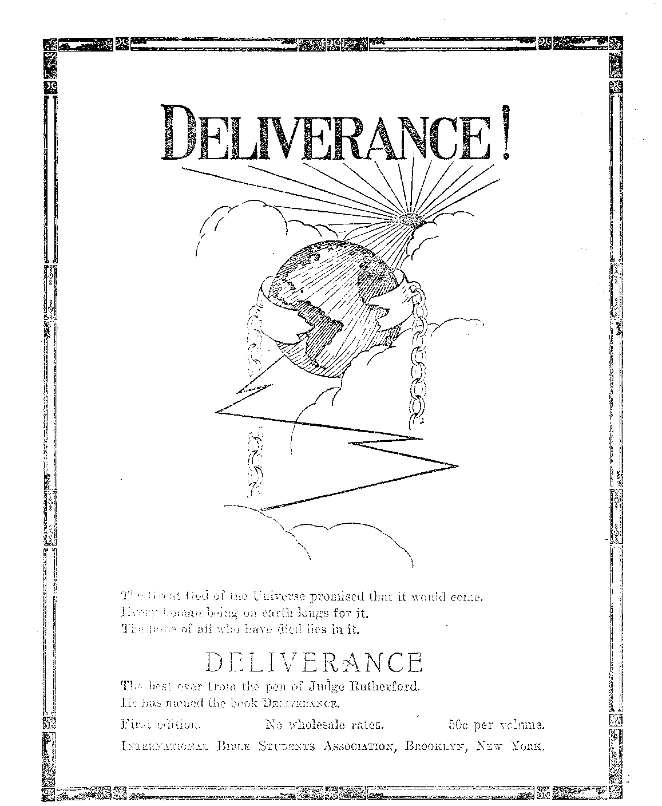

■ ■■ .......1 . ...
■ Labor and Economics
Social and Educational The Puritans
Radio Pbogbams ..................
Finance—Commerce—Transportation Railroad Passenger Traffic Stabilized ...
A Brief History of Steel .......
Political—Domestic and Foreign An Irritating Lobby at Washington..........
The Prohibition of Poison Gas Wab..........
SlDSLIGHTS ON AMERICAN HlSTOBY
Cause of the Revolutionary War
" Science and Invention
. Home and Health '
Herbs fob the Service of man ............... 463
The Town of Don’t-You-Wobby (Poem)
Travel and Miscellany Valuable Finds in Ontario ...
Colorado Jack-Rabbit Dbive ......
Religion and Philosophy - Thirty-Five Ministers Apply for One Job
COMFOBT FOB THE JEWS ................. 473 Jewish Articles of Faith ............. .
Published every other Wednesday at 18 Coneord Street, Brooklyn, N. Y., U. S. A., by WOODWORTH, HUDGINGS & MARTIN
Copartners and Proprietors Address: IS Concord Street, Brooklyn, 'N.Y., U.S.A.
CLAYTON J. WOODWORTH . . . Editor ROBERT J. MARTIN . Business Manager WM. F. HUDGINGS . . Sec’y and Treas.
Five Cents a Copy—$1.00 A Yeap. Make Remittances to THE GOLDEN AGB
Foreign Offices : British ..... 84 Craven Terrace, Lancaster Gate, London W. 2 Canadian......... 38-40 Irwin Avenue, Toronto, Ontario
Australasian...... . 495 Collins Street, Melbourne, Australia
South African ...... 6 Lelie Street, Cape Town, South Africa
Entered as second-class matter at Brooklyn, N. Y., under the Act of March 3, 1879
•tiWirnrinriirr
, _________________■ ...................... ■ |----—
Volume VII Brooklyn, N. Y., Wednesday, April 21, 1926 Number 173
THE Federal Reserve Board reports that although there were actually fewer workers in American factories in 1925 than there were in 1919, yet the total output of the factories was thirty percent greater. Of this thirty percent increased production, one-fourth went to the workers in the form of increased wages and the other three-fourths went elsewhere.
AMERICAN farmers are rapidly adopting such mechanical appliances and so arranging their work as to get along without the assistance of farm help. There are now in New York State less than 26,000 hired men on farms, which is only one-third the number so employed in the same territory ten years ago.
THE demand that farmers and others receive fair prices for their products seems reasonable. But what is a fair price! When the supply of a product is liberal the public consumes more of it. Then the supply is reduced and prices rise. When the supply of a product is restricted the public avoids it. Then the supply is increased and prices fall. No earthly Solomon can decide today what will be a fair price for anything six months hence.
OOME of the new fruits which Uncle Sam’s 0 Department of Agriculture specialists have found in other countries and will try to grow in the United States are the Chinese Yang Tao (a new-flavored berry), a delicious blue raspberry from India, and a diminutive apple which makes excellent jelly. Among the vegetables are Ming cabbages, which weigh forty pounds apiece; Japanese carrots, as big as a man’s leg; Philippine Bikas, -which make good jelly; and Turkestan melons, which have the flavor of cantaloupes but are as large as watermelons. An effort will also be made to popularize bamboo sprouts, which have been a Chinese table delicacy for generations.
UNION labor, which has succeeded so well in its banking projects, and which is now making its entrance into housing, has also embarked in the life insurance field. The new company issues the standard forms of personal, health, accident and casualty insurance and accepts premiums monthly.
rp AKING the country as a whole, every person has a one-fourth interest in a cow. That is to say, there are one-fourth as many cattle in America as there are humans. But in Vermont, where the most attention is paid to cattle breeding, there are more cattle than there are humans, and additionally the cattle average to be worth fifty percent more apiece than they are elsewhere.
Wild Deer in New York City
HDIIE game laws have so operated to protect J- wild life that it is now claimed there are several small herds of white-tailed deer running wild in the upper part of New York City, as well as in the adjoining towns of Pelham and Yonkers. In some instances they have done considerable damage by knocking down vines and frameworks.
A IB mail service has its drawbacks. Letters recently mailed in San Francisco to two Pennsylvania points required ninety-six hours, which is about all the time that the railway mail service requires to accomplish the same service at one-twelfth the cost per letter.
FOR a time it looked as though the operation of motor busses would bleed the railroad passenger traffic business white, but the year 1925 showed a fraction of only one percent loss in railway passenger traffic over the previous year, showing that for long rides the busses are not a serious competitor with a well managed railway service. The busses accomplish a good work in promoting better railway service and preventing unreasonable charges.
IN THE year 1923, in the United States, the per capita consumption of paper was 167.5 lbs., which is surely considerably in excess of the average weight, so that in fact each inhabitant of the country uses up each year an amount of paper in excess of his own weight. The United States uses per capita about sixteen times as much paper as the rest of the world, consuming about fifty percent of the world’s production.
THE International Paper Company is installing at Three Rivers, Quebec, four newsprint paper machines which have a maximum capacity of forty miles of newsprint paper per hour when all are in operation. One of the machines is already installed and operating at this rate of speed.
THE New York State Housing Commission reports that inasmuch as the city now supplies at cost the water supply, sewage disposal, recreation facilities, parks, streets and roads, all of which were once supplied by individual initiative, it sees no reason why it should not go a step further and supply the walls and roofs which the common people need as badly as they do these other things. It questions if society can permit the general security to be endangered in the face of conditions which are growing progressively worse.
THE New York State Commissioner of Correction declares that the crime wave in America is largely due to the efforts of drug addicts to raise the twenty dollars per day which they spend foi the drugs of their addiction. The per capita consumption of such drugs in America is ten . times what it is in Italy, five times what it is in Germany, three times what it is in England and two and one-half times what it is in France.
ONE thing the human family seems to be learning is that health is not promoted by the heavy, many-course dinners which were once considered quite the proper thing. Most ailments start in the intestines, and fruits and vegetables are best for keeping the intestinal tract healthy. But man was designed to be omnivorous in his food, as is indicated by the structure and arrangement of his teeth; and most people will keep fairly healthy if they use a variety of plain foods, provided only they do not use them to excess. White bread is a deadly foe to the digestive apparatus.
rpHE National Association of Travelers’ Aid Societies has been making a survey of four of Florida’s principal cities,and finds what everybody ought to known that they would find; namely, that in building up that great state it is noc white collar workers that are wanted but manual workers of all kinds, including stenographers, however, who are always needed everywhere.
TI IS known that there were stenographers in Rome in the days of Cicero, and now from the great mass of manuscripts discovered at Oxyrhynchus, Egypt, it is learned that in the year 155 A. D. shorthand writing was an established trade in Egypt, but the form of the writing is not clear.
ONE of the irritating lobbies at Washington is that of the country printers who are in arms against the action of the government in printing return addresses on government envelopes at ten cents for 500 envelopes. The government has been doing this for over fifty years, to the immense benefit of the postal service and all its users, including the country printers who now get millions of their papers delivered in their home counties free of charge, and who would charge $1 for the service for which the government now charges but ten cents. The country printers take the position that the government lias no right to engage in printing or to have it done by contract. That being the case what right does it have to pay for carting the country papers all over every county and get nothing for it'? The country papers should let well enough alone. Those who are looking for trouble sometimes find it.
THE object of threshing any article is to free the seed which it encloses. A new threshing instrument is in use at New Westminster, B. C., in which are threshed the cones of Douglas firs, Sitka spruces and red cedars. The seed, of which three hundred pounds are obtained every twenty-four hours, is used for reforestation. About sixty-five percent of the seeds germinate when planted.
WHEN a Philadelphia church advertised for a minister recently, thirty-five men of the cloth made application for the coming vacancy. Several of the applicants were from a different denomination, but willing to take the job if it would pay them more money than the affiliation with which they were then connected. But in most instances they made it clear that they did not want their congregations to know that they were willing to leave the old fold for a new one, for a money consideration.
WITHIN a few weeks recently, three American statesmen, James M. Beck, former solicitor general of the United States, Senator Wadsworth of New’ York and Senator Wheeler of Montana, have called attention to the dictatorships in Russia, China, Italy, Spain, Greece, Germany, Hungary, etc., and have stated boldly that America’s greatest danger at present is not red propaganda but the drifting toward a centralized government conducted by executive order in defiance of the will of the people as expressed by their representative bodies.
NOTHING is clearer than that the American people at heart hate and abominate the legalized murder which is called war. While military toys are still manufactured and sold in Germany and Japan, all efforts to popularize these toys in America have faded, and they should fail.
HD homas Jeffersox, who was called the “father of democracy”, did not believe in the League of Nations or the World Court. On one occasion he wrote:
Determined as we are to avoid, if possible, wasting the energies of our people in war and destruction, we shall avoid implicating ourselves with the powers of Europe, even in the support of principles which we ■ mean to pursue. They have so many interests different from ours that we must avoid being entangled with them.
Since the League Came to Town
SINCE the League of Nations came to town Uncle Sam has put through the Washington Limitation of Armaments conference, the Dawes report, contributed four or five billion dollars in relief loans, and made approximately fifty international agreements. In every way the United States has made a better record.single-handed than has the aggregation of nations which is supposed to have all wisdom in the earth.
TN ONTARIO, Canada, two recent discoveries of natural wealth have attracted widespread attention. One is of helium, which promises to be the greatest supply of this rare gas to be found in the British Empire. The other is of gold, in the Red Lake district, 140 miles from the railway, where unsurveyed claims have already sold for as high as $50,000.
STRANGE things are happening in radio reception in California. Increasing numbers of people are.reporting the reception of beautiful music without the use of radio receiving sets. The thought has been advanced that this music was not broadcast from any earthly station but was of spiritistic origin; and so good a paper as the San Francisco Examiner says that • this view of the matter is skilfully presented by one of its readers in a letter which, however, it neglected to publish.
(Translated from the Barmen-Elberfeld Stadt-Anzeiger.
rpHjil general commission of the International Conference for the control of the traffic in arms has endorsed unanimously the text of the protocol regarding chemical and bacteriological war, the signatory powers ratifying the confirmation of the treaties previously made regarding the prohibition of war material and of dealings conflicting with the international law. The wording prohibits explicitly the use of gases with suffocating, poisoning or similar effects, as well as all means of a bacteriological war. Germany declared at Geneva that it would be ready to desist from poison-gas war, the understanding being, of course, that a corresponding convention of all powers would agree to it.
But too little, as yet, does the imagination of a large part of the peoples of all nations seem to be able to comprehend what war of the future, that may break out any day, really means. There still prevails with many the illusion that the next war will begin like the previous one, after a fashion of historical lawfulness, diplomatic tension, tdtimate exchange of notes, recall of ambassadors, mobilizing of armies, enlisting of reserve troops and making ready their equipment, skirmishing at the front, clearing-up and reconnoitering activities, and finally the regular war. '
But that is an empty and meaningless illusion. Anyone who participated in the last war knows from bitter experience that in the course of a struggle involving millions, the men and the masses (as active, organic, animated sources of power) stepped to the background and transferred their sway to the machine which, however, too often turned against its own army; for instance, in cases where the artillery by mistake bombarded their own ranks or where the enemy trained his fire on the sanitary stations harboring his own captive wounded men.
Yet this last war had its organization, however abominable and deficient it may have been. There were yet men who by means of it created great things, and by it alone were enabled to do so, and that not merely for the benefit of their own country, but also for proof of what man can really do in the future. But in the long run the organization grew beyond men and crushed them and, throwing them like chaff to the wind, became a machine that lived in and through the war.
The last war developed more and more from a war between men to a machine-war, gradually taking away from man the only thing he,cannot do without even when pertaining to evil things, namely, his personal will! This last war was not merely a war of masses on a huge scale though immense masses participated in it. But above all that mass concurrence was as an impersonal, terrible and menacing automaton that destroys itself.
This war was about to devour itself, when a charitable God spared us the uttermost. The fight was broken off, but it is not finished. It longs for a continuation, like everything else that happens in life, and wants to come to a conclusion. Hence the tension in which we are living, hence the fear of a new war that wishes to continue the old and throw up the yet unfermented matter of its terror to a finish.
That renewal, when it comes, will be the poison-gas war, the chemical war, that will perfect the machine war and thereby overcome it; the war that will make an end with man as having a will, as a living organism, as animated force. We shall then return to nature, but in a different sense than any man ever thought of. The poisonous vapors of hellish swamps, thebenumbing gases from deep chasms of the earth, the dangerous air of primeval forests, the hard to breathe atmosphere of high altitudes; all these places where natural death lives, where it inflicts injury on life, are as nothing compared with the pestilential infection that will then commence.
Does one really believe that in the next war the armies will draw up in battle-array? Does one dare to doubt that, even before the official declaration of war, unmanned, electrically propelled air squadrons, loaded with vast quantities of poison-gas, will make the enemy’s country a desert?
A march of the reserves to join the regular army, a transport of a standing army to. the “front” (which, by the way, does not exist any more) is a ridiculous illusion. Who will march? The one poisoned in his home? Where will the barracks be, and the officers who are to oversee the mobilization and getting the civilians ready for enlistment and marching? Where is the organization for the reserves and for the provision of the homeland and for maintenance of oi’der? Are not these things hallucinations of a better past?
We live in benumbed history and do not know that the war, beginning in 1914, began as a 19 th century war, and was taken over-into the first epoch of the 20th century. But today a war, when it breaks out, will be a war of our days, a modern war in the truest and most demoniac sense. The last war was yet capable of development; the long (preceding) peace had stunted it or had a stunting effect; but the next war will be a completion and therewith an annihilation ! There will be poison and explosion everywhere, beneath the whole canopy of the heavens; and soon there will be nobody living on the earth that could give it a name. If there were a little more imagination in the world, it would be superfluous to suggest these things.
Supposing there had been soldiers in the past war who, gripped by Satanic delight in the machine and the power it bestows, had become obsessed; these could yet have been overcome. But now let us imagine that in the next war there would be an engineer somewhere, full of profound scientific knowledge of the powers which he can unchain, but which in the final end will control him.
lie and a few of his kind are the masters of death of whole districts and countries! They understand the secret of the power, and they know how to bridle it, if they desire to do so. Where is the soul that can endure this vast power without becoming insane ? But who can then command this man to cease sending out death; who can force or compel him ? Poison will be mechanically wafted forward and backward by unmanned airplanes, going up into the atmosphere and descending to the earth. Who may endure in such a hellish region?
The next war will breed men, mighty in destructive powers, 'who will be the dictators of chaos. The prophetic Dostojewski had a presentment of the possibility of the future death of mankind in that “bacillus dream” of Raskol-nikow, where it is related how mentally and morally diseased mankind will disintegrate into atoms by means of poisons; how in the whole • world only a few could save themselves, those blameless ones and chosen ones, designed to be the founders of a, new race.
Will it become as bad as pictured or not? Who knows? It may become as bad or worse. But even if “only”’ certain districts are completely devastated and not the entire earth; if “only” local pestilences and troubles break out and hot general chaos; if “only”’ Berlin, Paris, Vienna or London is destroyed, and there are “only” three times as many dead and crippled as in 1914-1918, who could bear the responsibility for “only” that much?
AMERICAN history, as commonly understood to refer to the events of the American Republic, is but brief. Necessarily so, since this country is now only7 in its second or third century7, according as the matter is viewed. Though short, this period has been filled with events of important historic note. Little Mary’s school book is filled with accounts of patriotism by which the early colonists brought into being this glorious republic. There is a number of highlights in American history, connected to -which are numerous interesting sidelights. The object of this brief treatise is to view both highlights and their attending sidelights.
That this review may7 differ somewhat from the story given in the school books is to be expected; for upon investigation we have learned that subsidization does not' stop with the newspapers. As the power of propaganda has been put to unlimited use in all branches affecting human welfare, for the purpose of supporting a wobbly system of civilization, we should not be surprised that school histories also have been tinctured by the propagandist’s pen. But whatever the sidelights herein given may lack in inspiration or “patriotic” fervor, they make up in truthfulness.
The historic sidelights treated herein are, The Puritans, The Slave Trade, The Boston Tea Party7, The Cause of the Revolution, and Democracy. These will be sufficient for present consideration ; to upset the entire order of history Would be disastrous.
PROBABLY the largest human cargo ever transported across the “Big Pond” in any one vessel came over in the celebrated “Mayflower” on her voyage across the seas to the land of the free and the home of the brave. This must be so, because there is not a prominent family in America whose ancestors were not first cabin passengers on that world renowned trip. No “Leviathan” ever carried a larger or more precious cargo.
The Puritans were Protestants who, according to our school histories, braved the turbulent seas and the dangers of a wild country in order to escape unbearable religious persecution.
The real truth is that the Puritans of Cromwell's days persecuted the Catholics, and when the Catholics saw fit to return the compliment with interest and the Puritans found they were getting the worst of it they packed up and left the country in favor of more peaceful climes. Mr. Oscar Ameringer, a noted socialist, describes them rather humorously as “a pious, bigoted and intolerant lot who regarded a chronic fit of the 'blues’ as the natural state of man, and who embodied their vinegar ideas into a set of laws called the ‘Blue Laws’”.
So intolerant and blue, so pious and bigoted, were these Puritan forefathers that when they found a Quaker who worshiped God in the wrong way they burned a hole through his tongue; and this right after thanking God for their deliverance from the dangers of the sea. Also they penalized with the greatest severity the teller of a harmless joke, and if one should so forget himself as to laugh at it the stake and burial in “unhallowed ground” was his reward. Witch burning was their favorite pastime, and when more humane folks put a stop to it they invented the , gluttony of Thanksgiving and got even.
Not all the Puritans came to America, only those who lacked sufficient courage to remain and fight it out. Americans who delight in tracing their ancestry back to the “Mayflower” had better leave that subject alone or they are liable to find that “that colonial dame” from whom they are descended was not so noble as we have been given to believe. More than one American bachelor exchanged a bale of frost-bitten tobacco for that which in our ignorance we were wont to look upon with pride.
TN THE year 1662 Charles II, who ruled Britain -*■ “by the grace of God” and who was the bold and intrepid “Defender of the Faith”, bearing the very weighty title of “His Majesty”, chartered a company'known as “The Company of Royal Adventurers Trading to Africa”, with the purpose in view of supplying the British colonies with 3,000 African slaves per year. This company failed. Another was chartered by the same “Defender of the Faith” in 1672.
In 1692 the British governing body allowed other English merchants to ply the trade in “black ivory”. Merchants from the American colonies shouted loud for an opportunity to engage in this slave traffic, and those who shouted loudest were the Puritans—those pious, noble, Christian, 100% American ancestors of ours. They insisted that the coins in those days must bear the inscription, “In God we trust.” What they evidently meant was that God alone is trusted—all others must pay cash.
Another rather interesting feature of the slave trade is that the traders lectured before religious bodies, the Y. M. C. A., etc., and sat in the front pews at church. Let us hope that the descendants of such a pious people would shun profiteering, franchise grabbing, bribing of legislatures, and corrupting of councils, and thus not fall into the errors of some of our “best citizens”.
WITH what inspiration and strong patriotic fervor welling up in our bosoms do we study the account of the pouring of English tea into Boston Harbor because of the heavy tax imposed thereon, as shown in our school books. This event gave opportunity to show real 100% Americanism. How dare the British tax the tea the worker never drank because he could not afford it?
Surely something is wrong here; for George, as silly as he was, would never be allowed by his advisers to make such a terrible mistake as to antagonize Britain’s “best people” who owned plantations in the American colonies. The truth is, tea was doubly taxed, both export and import. The English merchants had to pay both, but our 100% Puritan American smugglers paid only the export and avoided the import tax by landing their tea at some dark corner of
our extensive coast line. This saving of import duty, made it possible for the American merchant to sell cheaper than the English merchant; therefore English tea accumulated in Boston Harbor unsold. .
Our good patriot John Hancock appears to have been one of the chief smugglers. In fact on the day of the battle of Lexington John was to have appeared before the Admiralty Court of Boston, charged with robbing the English Government of $500,000 in import duties. His estimable lawyer was John Adams. Now we understand why they said, “We must hang together or hang separately.”
The British Government finally cancelled the import duty on tea to America so that the English merchant could compete with the smugglers, who were Hot paying it anyway, whereupon the latter dumped all the accumulated British tea into the Boston Harbor to forestall competition, and continued their business as usual.
GAIN we.must not look into little Maryas school history for the full facts; for there we shall read a regular fairy story with merely the “Once upon a time” left off. The real cause of the revolution was the property owner who disliked paying taxes to the British government. It was perfectly proper to tax the serf, but when the tax collector came too near to the pocketbook of the rich landowners he touched a very tender spot. A tax on tea could not affect the working class of 1774, because they could afford only native sassafras, upon which there was no tax. The tax on rum and molasses did not bother the worker; for the rum and molasses were used in the slave trade, and the worker had no slaves. The rum paid for the slaves, and the molasses was made into rum; so it was a merrygo-round of rum, slaves and molasses. Neither was there reason for the workers to go to war because of taxation without representation. The working class had no vote; but it was the property owner who was taxed, and he could vote.
Ben Franklin told the story of a man in Philadelphia who voted because he owned a mule. One day the mule died and the man lost his vote. Franklin asked, “Was it the man or the mule that voted?” and we agree that it was the mule.
So the workers had nothing in common with the revolt, nothing to gain or to lose; yet by the use of high-sounding phrases, as found in Mary’s schoolbook, their masters provoked them to war with England. They put guns into the hands of the workers, but did not say, “Here, defend that. $500,000 we stole.” Then at the close of the war the people were asked in still higher sounding phrases not to bring shame upon the new country by repudiating legitimate debts, and thus the common people were induced both to fight and to pay for a war which enriched only their aristocratic masters.
The father of his country, even though he refused to tell a lie, became very rich. His sense of gratitude is well shown by his refusal to voice a protest or to assist in any way America’s greatest friend and supporter, Thomas Paine, when illegally imprisoned in France.
TAEMOCRACY, often explained as “a government of, for and by the people”, is a phrase which sounds well but which is shallow in fact. After the war, with the resulting independence as the reward of victory, we were told that we had gotten rid of a feudal government with its king and nobles; but we had a rude awakening, having found our cherished democracy but autocracy under another name.
Suppose that the common people who rule themselves (?) desire a certain thing, and suppose that that which the people wish is what the moneyed interests do not wish. Do the people get what they want? They do—NOT. The same four checks which are upon the people of England were incorporated into the constitution as checks upon the people of America; and when a law is proposed that is inimical to the “interests”, the bill must first pass the House, who can refuse to vote, and thus promptly defeat it. But if they do pass it, then the Senate has a chance to throw it out. If the Senators should happen to pass it to appease the voters back home who elected them, then the President can veto it. And if he should so forget his place and purpose as to not veto it, then the ex-corporation lawyers on the Supreme Court bench.can promptly read its obituary. One old lawyer can thwart the voice of ten million American voters with the mere swipe of his pen; and there is no referendum or appeal from his dictum. Democracy, thou art a fair lady; would that we might hold thy hand and call thee ours.
WHAT is wrong with the man who fights for tea. he never tastes, who goes to war to obtain slaves he does not and cannot possess, who kills his brother for land that is not his own? From the eyebrow’s dow7n the average common man is a 'worker, w’ell suited to his blue denim uniform; but from the eyebrow’s up there is a certain amount of empty space which he allows the rapacious rich, the unscrupulous politician and a degenerate clergy to fill wiili well-worded, propagandized suggestions. Thus we have allowed ourselves to become the cats-paw of unscrupulous profiteering masters.
If finally the workers attempt to think or act for themselves, or to enjoy some of the liberty they have let slip, the masters hire spies, detectives, strikebreakers and thugs, meanwhile invoking court injunctions to restrain and beat thorn, and the workers continue to vote the “straight ticket” and put into office the very men their masters nominate. But the dust and mist of the past w7ill not always becloud the brains of the common people. A better day is now’ dawning, in which blindness -will be removed and injustices rectified.
TilIS article is written with the intention of giving the readers of The Golden Age- a fairly good idea of the art of tempering and a brief sketch leading up to the present use of steel.
Those living in the remote sections wdiere they have occasion to temper their own tools will possibly find these remarks of interest and beneficial in their labors.
The book of Genesis, gives us an account of Tubal Cain, w’ho was “an instructor of every artificer in brass and iron” .(Genesis 4: 22), but we are not informed as to the use to v’hich iron ■was put in those ancient times.' As no steel ■was probably made before the Noachic flood, very likely iron was used for rough implements, even as tools of stone, copper, brass and bronze were common. Sometime after the flood, in the city of Bagdad in Assyria, they had furnaces, possibly used for making glass, and the compositions used in making brass and bronze, as excavations have revealed.
Iron was used by the ancient Egyptians for blood medicine and for inks and dyes only.
The African Negro urns evidently the first man to mine and smelt iron, making the iron over into steel by mixing it w’ith w’ood charcoal, bone charcoal, and old scraps of leather, now7 knowm as carbon. Their stone furnaces w’ere usually at the w’indwmrd side of a hill, goatskins being used for bellow’s.
The Arabians wrere the first to make a crucible, an invention which wras adopted by other nations.
Steel By John (J. Miller
India brought the next advancement in steel, by mixing “wootz”, now knowm as “ferro manganese”, with iron. This early steel wms all used for the making of swords, cutlery and hand tools, such as saws, chisels, axes, razors, etc. Unfortunately there has been no record kept of the nation who made the first razor, or the first grindstone upon W’hich the first razor wms ground.
The greatest and parent invention of all inventions is the wheel. No record was ever kept of the first nation to make a wheel, although some credit the Egyptians w’ith making the first W’heel from granite rock.
All means of modern transportation, locomotion, paddle wheels, propellers, faucets of water systems, installation of electrical devices, automobiles, airplanes, submarines, and in fact all rotary or revolutionary plants, valves, etc., are merely extensions and improvements over the ancient stone wheel.
The fine masonry work of ancient history wras a secret of its own simplicity. Their method w7as this: They sawed their pillars and blocks of stone, setting them-unfaced or unfinished, except where the blocks were to be brought together. These sides were faced by highly carbonized steel chisels and highly tempered copper chisels; then the sides now finished were coated with a coating of gum arabic, made thin by using salt and water. The blocks w’ere then brought tight and evenly together by the use of w’et ropes made of hemp flax, reeds, or anything that would contract or draw in when drying. They were bound around the base block, thence upward* around the block to be set, and so on up to the height wanted.
The fresh damp skins of newdy killed animals, steers and cows, were also used; the contracting of the ropes and skins drawing in and men guiding and gently pushing on the blocks brought an even and exact setting. The facing or finish was then chiseled, the dust of the chiseled blocks filling in the crevices, which with the gum arabic liquid formed a cement almost as hard as the stone and almost completely hiding the joining of the two blocks.
Damascus, one of the oldest of all ancient cities, was filled with men of an artistic temperament and nature. Some of these men turned from their arts and pursuits and went into the tempering of steel. With their art and talent these deep-minded men of Damascus soon outclassed all others, and by keeping their secrets to themselves they soon led the world in the art of tempering steel.
Following are the colors of the steel tools when taken from the fire, as worked by the smith, as well as the degree of temperature. By the use of a charcoal fire, and by sprinkling borax upon a sword while in the fire, they would make a sword the point of which would bend to the hilt, and spring back to normal position while the edge would cut in two either a feather pillow or a piece of wrought iron.
Lancets (very pale yellow) ............... 220°
Surgical instruments and razors
(straw color) ................................... 230° to 235°
Penknives and common razors
(golden yellow) .................................. 240° to 245°
Scissors, cold chisels, shears (brown) ..............................255°
Axes and planes (brown dappled with purple) ,._..2653 Table knives and large shears (purple)...... 275° to 280°
Springs, watch springs and swords
(bright blue) .................. 285° to 290°
Fine saws and augers (full blue) .................290° to 295°
B'and saws and large saws (dark blue) ...... 315°
Up to the present time these colors have never been improved upon, and as these colors were used only on edge tools the temper driven was of a very small degree of penetration. The farthest that temper ever has been driven into furnace steel is one-eighth of an inch. The sudden plunge into cold water or oil causes a “chill” to come over the steel; the steel is then cold on the ouside but warm in the inside, as the “chill” cannot penetrate into the middle of heavy furnace steel after its strength has been spent. Thus the outside is hard while the middle remains soft.
After the “science of war” developed from hand-to-hand fighting, fire arms and cannon made from furnace steel were used; but the cannon was (and now is) defective, resulting in the frequent bursting of the cannon—the heavy firing tearing aside the softness in the inside of the steel and cracking through the temper, thus bursting the cannon. The railroads using the furnace steel for rails have also showed up the weakness of the very best of heavy furnace steel.
An English gentleman named Dodd invented what was known as “Dodd’s Process”, which was to coat the already tempered steel rail with a preparation of his mixture and temper the rail a second time, bringing about a second or double thickness of temper; but this was not successful. It is now known as “case hardening”.
The broken rail,is the bugaboo and nightmare to every railroad man, from president down to section hand. The broken rail has all train crews, agents, telegraph operators, electricians, roadmasters and section foremen continually on the alert.
The cause of the broken rail is this: Beyond the one-eight of an inch of temper the rail is filled with soft material possessing much hollow space between the atoms of the molecules, while still smaller spaces exist between the electrons within the atoms.
The heat of summer and the cold of winter cause an expansion and contraction of this soft material, which eventually produces a crack in the rail. The rain and the dews of night, and the melting frost or snow, seep in, penetrating the molecules, then freeze, causing the rail to snap under the power of pressure. This is especially so in damp and grassy sections, where dews are heavy, or in exposed places where the frost and air are keen.
All railroads use what is known as anti-creepers or rail anchors, to keep the rails from expanding or contracting; but as yet they are not very successful.
The present system of steel-making is defective, but by and by this will be overcome and travel will be made safe and lives more secure. The future holds many pleasant surprises for us all. -
, Colorado Jack Rabbit
JACK RABBITS are prolific, and increase so rapidly throughout the western states that they become a pest, a menace to croppage, and means must be employed for their partial extermination or the country would soon be overrun by these destructive animals, and the crops would be damaged beyond toleration. The method of elimination is what is known as rabbit drives at intervals and conducted in the following manner:
All ranchmen, farmers, gardeners, etc., within a radius of say ten to fifteen miles are notified that on a certain day there is to be a rabbit drive in a certain section or district, and to be on hand with gun and dogs and stationed on horseback at a certain point, and at a designated time start in a certain direction towards a common center perhaps five miles or more distant. To this point the rider goes and carries out instructions. At the stated hour he proceeds with shoutings towards tlie central point, as do all the other riders in the big circle.
In other words a large band of men on horses form a circle twenty to fifty miles in circumference and with accompanying dogs of every description and gunnery and abundant ammunition close in gradually at a central point jumping rabbits as they proceed and driving them onward to the place of their destruction.
At the start of the big drive these horsemen are a hundred or more yards apart, and as the circle narrows and becomes gradually smaller by the onward march the riders come closer and closer together unt il at the end of the drive they are solidly packed and are sometimes two or three deep in the now restricted circle. The rabbits are by this time so massed as to be in each other’s way and they climb one on top of the other. Sometimes a rabbit “back fires” and escapes between the riders, but not often. He is usually shot before he gets away.
From the saddle or from afoot the drivers shoot the frightened creatures until all are slain. In one of the rabbit drives just south of the town of Haxtum 22,000 rabbits were dispatched, and were then sent by free cartage to the Denver Post and were gratuitously distributed among the city's people. Anyone.could have as many rabbits as his family could eat or dispose of to friends and neighbors.
It was Rabbit Day in Denver, Colorado. The
Drives By J. A.Bohnet
butchers were out of luck. Some of the rabbits w ere sent to Omaha, and some of them may have gone to the Mexican quarter for the making of “chicken” tamalas—such things have happened.
At another jack rabbit drive in the same locality 33,000 rabbits were slaughtered, and altogether 70,000 of the pests were killed in one winter in about four townships thereabouts. The drive was towards Holyoke—eastward—in the north-western part of the state.
Sometimes the ammunition becomes exhausted in one part of the death circle, and as the firing of guns ceases in that quarter the rabbits charge that section by hundreds and escape between the legs of the horses and men. Often the line has to be silently held for hours to enable the riders to secure a fresh supply of cartridges and shells. Case after case of ammunition is used at each of these big rabbit drives.
Another style of jack rabbit drive is to form the horsemen in a large semicircle five to fifteen miles in length without gun or dog and proceed with yellings to a central point where a V-shaped fence with a circular pocket at the narrow (or pointed) end has been erected, of wire netting or fence picketing, and into which the rabbits are driven. Then the aperture is closed •when the annuals are all inside, and they are killed -with clubs.
When the rabbits find themselves cornered with no way of escape, and they see their companions being clubbed to death and hundreds and thousands of dead ones lying about on every hand throughout the netted enclosure, many of the frightened creatures set up a pitiful cry very much like the wail of an infant. It seems cruel to continue the slaughter. It is enough to make one sick at heart. Yet they are pests and the killing goes on until not a live rabbit is left in the pen.
There are various other styles of these jackrabbit drives, but the above-mentioned are the most common. The latter style was practised near Bakersfield in central lower California when rabbits were numerous there. At one of these California drives 36,000 rabbits were killed. At one place the dead rabbits piled so high against the fence that tlie posts gave way and hundreds of rabbits made their escape by jumping over the pile of dead ones before a line could be formed to block their egress.
Those rabbits were also sent to large cities for consumption, and some people ate them as chicken tamala and probably did not flnow the difference. The Italians are specially fond of jack rabbit meat.
Jack rabbits are gray in summer and white in winter. The cotton-tail rabbit runs with its fore quarters low and its hind quarters high. The jack rabbit runs with its fore quarters high and its hind quarters pressed low like a kangaroo.
In a rabbit drive the wise one hugs its cover and escapes destruction. The startled one is a nimble jack and hops up and with long, quick jumps scampers off rather unconcerned until it meets the oncoming opposite drove. Then things become serious and some avenue of escape is sought but now all too late; he is in for the killing and is notched as another number of the slaughtered.
Holyoke, Colorado, is about twenty miles east of Haxtum, and in daylight is wholly invisible behind the prairie swells. At night its lights are plainly seen by mirage elevation of the lights. Not merely a reflected glow blit the lights themselves are mirrored in the sky, so that each individual light is clearly discernable, like the appearance of a large, well-lighted factory or mill, two or three miles away. This phenomenon can be accounted for only by the peculiar atmospheric condition so often existing in the prairie lands.
The atmosphere in this part of Colorado is so clear that a star of the first magnitude can be seen directly on the horizon. As one traverses the country at night he may be fooled into thinking that a city or town is a mile or two away, when in reality it may be fifteen or twenty miles distant.
OUR modern thinkers have agreed that reading and writing, with a knowledge of accounts, do not constitute an education. Horace Mann lias stated that education in its dominion extends over the threefold nature of man. This is the twentieth century idea, namely:
(1) That the body should be trained by the systematic and intelligent observance of those laws which promote health, increase strength and prolong life.
(2) That the mind should be so cultivated that it will be invigorated and, with the gaining of knowledge, come to possess in as large degree as possible all those talents which are allied with virtue.
(3) That the moral and religious susceptibilities of man’s nature should be so enlarged as to dethrone selfishness and enthrone in its place conscience, with affections outwardly of goodwill toward man and upwardly of gratitude and reverence for God. These are high ideals and can be realized by help from the right source— the Lord. They cannot be realized by the feeble efforts of man alone.
The foregoing ideas account for the fact that 'during this century athletics has come to assume a very important place in the curricula of our schools and colleges. This condition of affairs has, of course, been criticised by many.
But in answer to the critic George E. Johnson of Harvard says:
Neighborhood jealousies, race prejudices, mob violence, perhaps wars, exist largely because in the education of children and youth the instincts and emotions under stress have not been brought under control of the will and reason. It is notable that where inter-institutional and inter-community games are rare, control, justice and courtesies between opposing factions are rare; and where such games are most frequent, the best order prevails.
Mr. Roy Bedichek in the Interscholastic Leaguer contends that athletic sports bring about a laudable contempt of softness (manifested in the proper scorn of the “jelly-bean”), intrepidity, courage, loyalty, surrender of selfinterest, self-control under exasperating conditions, and courteous treatment of rivals. Other authorities might be quoted, but the foregoing gives us a very good idea of the modern educator’s viewpoint.
The Word of divine authority informs us that the wisdom of this world is foolishness with God. I find this is invariably true. There are both good and bad in athletics. Erom what personal contact I have had with this branch ofi modern wisdom I am of the opinion that the bad overbalances the good, proving it to be foolishness.
462
■" \
Not from the idealistic viewpoint of the educator but from the realistic standpoint of everyday facts let us examine into athletics with the searchlight of truth. The first game of sport on the athletic calendar of schools and colleges in America is football. The hard-fought games are, at times, almost as thrilling as the gladiatorial combats of old, and often prove quite as strenuous to the combatants.
1 have witnessed men fighting in these games who were in a thoroughly dazed condition from the treatment received from the opposing team. Others seemed to be in a crazed condition and able to stay in the combat by an almost supernatural strength which the applause and yells of their .supporters seem to give. Often serious and permanent bodily injury is the reward to some of the contestants.
L have stated that these games are combats. The coach of each team seeks to instill into each individual of his team the fighting spirit. “1 don’t want to see a smile on the faces of a one of you when you go into the game,” were the words of a coach to his team before an important game of last season. Another coach insisted on a player continuing in a practice game even after he had sustained a broken rib.
During every college game of importance a physician is kept on hand with a First Aid kit and a stretcher. These are not undue precautions. Every team has its reserve men to replace those who are injured during the combat. I have seen players carried from the field suffering from broken ribs, broken collar bones, broken legs, various internal injuries and sprains.
True, the rules of football have been somewhat modified in an endeavor to make it a less dangerous game; but these rules cannot be changed greatly to alleviate the conditions which I have mentioned without changing this sport entirely. .
Basket ball is a less dangerous game than football ; and since only five players are required to the team it is adapted to the use of small rural schools. Where the rulesi of basket ball are observed, and where the referee requires their observance, the game is a fast one, but nevertheless a rather tame sport.
In the rural districts, however, the rules are not often observed. The game then assumes the. nature of a rough and tumble fight, with
Bnooxirx, N. T,
the victory to the stronger team. Certain classes of spectators enjoy the game only when it is of this nature.
Baseball, as a college game, is usually played toward the close of the college year. It is not a dangerous game if all the players are skillful and believe in “fail’ play”. However some serious accidents have occurred during baseball games. More players on amateur teams are injured than on the professional teams.
There is some gambling on college games but not to the extent that we find on the National League games. . .
Schools and colleges have attempted to bar the professional athlete by prohibiting anyone from playing on a school oi’ college team who receives pay for it. However this rule is not entirely satisfactory. Sometimes, oftentimes, the best athletes from small schools are induced to come to the larger schools by offers of free board, free tuition, and other inducements. Thus the professional spirit continues to be encouraged.
That althletics often does irreparable injury to many youths is admitted by medical science. Many of the best athletes die young. The growing youth can engage in too strenuous exercise, or can overtax his physical strength, by playing in a hard game too long. The result is that mere youths often develop heart disease, since the heart is usually the first organ affected by overexercise.
As athletes grow old or lose their ability to win in contests they often settle down to a sedentary life and cease to use their 'well developed muscles to any extent. This is a leading cause for their being short-lived. The athlete who would live to a ripe old age must continue to use his developed muscles and “keep physically fit”.
We find among the military men of our day a number of athletes; we find some athletes among our professional men, and a few athletes may occasionally be found among our great thinkers. However with few exceptions our great thinkers and educators belong in a separate class from athletes.
It is a truth which must be admitted by those who will investigate the facts that one who would be a skilled athlete does not have the time to train his mind also that he may became a great thinker. One cannot do his best toward
developing his mind and body at the same time. He will neglect the one or the other. This is because of mental and physical imperfections under which the human race labor.
However, proper athletics (the training and developing of the body) and education are inseparably linked. Every activity in which humankind should engage is linked with education. What I am attempting to show is that athletics as it exists today is not what it should be. It cannot contain that which is only wholesome and best until the world’s present educator and coach, Satan, is replaced by the world’s future educator-in-chief, Christ. The educational policy of the former has been shaped with a selfish object in view, the retention of himself in power at any cost.
With the beaming in of the morning rays of earth’s new day an angel of light and dazzling splendor has appeared on the horizon. Knowledge has been increased. Mankind have looked up to this angel of knowledge and hoped for great, things. Education has been heralded aa a panacea for every ill that besets civilization. But something else is also needed.
Athletics has failed to achieve what its promoters promised. Every branch of education has failed in the fullest sense to accomplish that which it promised to accomplish. The angel of light is waning in his splendor. In due time the world will not look to him for leadership. They will find a greater Leader who will give them true wisdom from above. And under the leadership of Christ Jesus throughout the golden age we may expect that the greatest athletes the world has ever known, yea much greater than the world could dream of, will be developed. The prophet says, “They shall run and not be weary.” (Isaiah 40: 31) Think of it! No athlete of today can do this. -
ONE of the Biblical prophets wrote: “He causeth the grass to grow for the cattle, and herbs for the service of man.” (Psalm 104: 14) In this article we shall consider the value of herbs. .
There is or should be, but one idea, but one main object in medical practice, and that is the improvement «f the quality and circulation of the blood; for the blood is the life. By this process all growth is accomplished and all repairs must be made. Therefore remedial measures are valuable only as they act upon the blood and circulation, removing impurities therefrom and restoring the correct chemical balance of the former and insuring its efficient distribution throughout the system.
Nutrition is the physical basis of life, and the disturbance of this function such as expressed in the words “mal-nutrition” and “mal-assimila-tion” must of necessity be regarded as potent factors in the host of ailments to which mankind is subject. The state of nutrition in any organism, whether it be plant or animal, determines the state of health of that organism.
Man seems ever to be at variance with natural law, and in no way does he violate nature more than in his indulgence in eating and drinking.
By Erie F. Powell, Herbalist, England
The body can assimilate only a certain amount of nourishment each day, and all food taken in excess of the quantity assimilated becomes waste matter; and if this is not speedily eliminated from the system, auto-intoxication (selfpoisoning) results. Ill health is bound to follow sooner or later, and man becomes the poor victim of a thousand ill-considered efforts to restore health by the means of poisonous drugs and stimulants which only add to the trouble and eventually leave him a physical and mental wreck.
'When the normal condition of the digestive, assimilative, and circulatory organs is interfered with in any way defective circulation is the result; hence the importance of correct eating and drinking. Wrong feeding means poor blood, chemical unbalance. A clogged body is the outcome of such a condition. In proportion as the body is diseased in that proportion functional activity is suspended. The vital organs slow down, and until normal function is restored health is an impossibility. Nature sometimes makes an effort at elimination. That is, the body makes an effort to overcome the clogged condition and eliminate the cause of the trouble. Hence the colds, fevers and inflammations to which we are subject; fever is nature’s effort
literally to bum up toxins and thus help restore the normal condition. •
No machine will work properly if clogged and dirty, and it is exactly the same with the human mechanism. Health is a matter of purity of body and mind, and it is the writer’s object in this brief article to give some simple but powerfully effective information for the purification of the body.
. Much has been said in The Goldex Age on the vital question of diet, and your readers are no doubt fully acquainted with the fact that commercialized foods are little better than useless ; the natural produce of the earth being the ideal food for man, supplying the essential mineral salts and vitamins in which “faked” food is almost entirely deficient.
A most important point to impress, however, is that many of our cultivated foods are far from being perfect. Wrong and excessive manuring of the soil has most disastrous effects upon the health of vegetation and in some cases actually renders it unfit for human consumption. Also plants raised year after year on the same soil upon which no other crops have been grown are known to be deficient in organic mineral elements, the continual production of the one species without change having exhausted the soil of these elements. We are just beginning to learn something about correct fertilization; and a little while along the stream of time, when adverse influence has been withdrawn from the atmosphere of our planet and when it is fully under the control of a divine government, then and not until then will the earth yield her increase and produce perfect food suitable for a race of beings destined to live for ever if in entire harmony with the laws of the new government. ‘
We find Hint wild herbs are rich in the vital elements so essential to life. All down through the ages herbs have been successfully used for. the elimination of disease and the promotion of health. Herbs, noted for their virtues in certain disorders, have come down to us today, having withstood the acid test of time; and many of them stand unrivaled as specifics in certain diseases. What ancient herbalists learned from experience and observation modern science has enlarged upon.
Herbs that have been of value in diseases marked by a deficiency in one or more mineral elements have been found to be rich in the very element required, thus supplying nature with the thing she needed. Moreover, nearly all herbs have a powerful eliminative action, and morbid material is speedily eliminated through the system’s appointed channels. By clearing out the waste matter, supplying the essential chemical elements, and supplying nourishment at the same time, herbs come first in the rank's of therapeutical agents calculated to be harmless and effective in combating disease.
Many years’ experience in various branches of healing has confirmed the above statements and the writer would pin his faith to simple herbal remedies, combined with reconstructive diet, before any other known system. Herbs assist in eliminating the root cause underlying the symptoms produced. Most drugs are entirely foreign to the system and tend to suppress nature’s healing effects; they interfere with all the vital functions and. only add evil to evil. You cannot cast out the devil by Beelzebub.
Massage, spinal adjustments, hydrotherapy and other natural methods can be employed in conjunction with the herbs if desired and, of course, attention should be paid to diet in all cases.
The fact must also be impressed upon the reader that one of the most evident causes of both physical and mental degeneration is wrongthinking. Morbid thoughts produce disease and poisons within the body, just the same as wrong feeding. Mind governs matter, and if one is suffering from a clogged brain that organ cannot functions normally, and the body suffers. A11 the success ever accomplised in this imperfect world seems to have been accompanied by a certain amount of sacrifice and self-restraint. It is so with those who are seeking health. Appetite must be curbed; physical desires and impulses subdued; thoughts must be pure: one must be pure all through in order to enjoy a measure of goodly health.
When mankind think correctly as a result of being in harmony with the laws of the glorious kingdom of Messiah; when they meditate only upon those things that are true, honest, pure and lovely; when.love is the prominent characteristic in every human heart; when the Sun of Righteousness floods the whole earth with his beams, then -will come the desire of all nations, perfect health, mental and moral perfection, and —wonderful thought—“'God will dwell with them, and they shall be his people.”
CT1NG on the principle that all disease, except where mechanical lesions are present, is caused by impure blood and obstructed circulation, the logical procedure in every-day ailments is to aid elimination and improve the blood and circulation. The following recipes are entirely harmless and have proved effective when all other means have failed. They may be given to feeble and aged individuals without fear of harm resulting, and should be persisted with until the desired effects are produced:
Anaemia ■,
The cause of anaemia is lack of iron in the blood. Th is cannot be replaced by inorganic iron as purchased al a chemist's; inorganic substances cannot be accepted by the cells of the body. The natural way to supply the deficiency is by eating foods rich in organic iron. Watercress, leeks, cabbage, lettuce, spinach, celery, endive and carrots are all rich in iron. At least one salad a day should bo eaten, composed of one or more of these vegetables. Cooking spoils vegetables and robs them of their mineral salts. One leaf of raw cabbage is hotter than a whole one boiled. All dark berries and fruits are rich in iron. Instead of ordinary tea, take bran tea. It is made by stewing a good quantity of ordinary bran in water. Strain it and add brown sugar and milk to taste. This is a wonderful drink for all diseases caused by a deficiency of mineral elements.
A splendid herbal medicine is made by infusing an ounce each of yellow dock, bogbean, and comfrey leaves in a quart of water. Simmer slowly for twenty minutes. Strain and bottle.
Dose: A wineglassful every four hours.
Appendicitis
One ounce each of elderblossom, peppermint and yarrow; best crashed ginger, half an ounce. Simmer in three pints of water for twenty minutes. Sweeten with old-fashioned black treacle (not golden syrup) and take a wineglassful every fifteen minutes until relieved. The .medicine must be taken hot every time, and you must keep it up, sometimes for twenty-four hours. A cure is usually certain in the most severe cases. Do not be afraid of the perspiration caused. You may vomit at first, but that will pass off and you will be all the better for having an empty stomach. Use the leaves left over from each infusion to make a hot compress to cover the whole of the abdomen. You will, of course, need fresh infusions continually. Kat no food until a cure is established.
Asthma
Sufferers should practically live out doors in pure air. Deep breathing should be practised daily in order to strengthen the chest and lungs. Leave alone the much advertised inhalants. Take one ounce each of vervain, horehound, and elecampane. Simmer in three pints of water for twenty minutes.
Dose: A vineglassful every four hours. Cut down the diet, especially sugars and starches. Eat at least one good salad every day.
Bronchitis
Exactly the same as for asthma. Do not, eat white sugar: pure honey is the ideal food for this complaint.
Cancer
Cancer is almost unknown among the Jews. This may be owing to the carefid inspection of all their flesh foods. People who live on a vegetarian diet are also free from this scourge. The writer has heard of only one case where a vegetarian died from cancer, and that was in the system before the reform diet was adopted. A natural diet has been known to cure cancer. Never have more than three light meals per day, and have the food as raw as possible. Cut down the sugars and. starches and thus give the body a chance to eliminate pathogen, the cause of the trouble.
Here is a herbal remedy that has cured many very severe cases. Violet leaves, yellow dock, red down tops, one ounce each. Simmer in three pints of water for twenty minutes. Strain and take a wincglassfi.il every .four hours. If there are any external sores make a poultice of the used herbs and apply freshly morning and night. Follow these instructions and startling results may await you.
Catarrh
Here again the sufferer must cut down sugar and starch, and include an abundance of green, leafy vegetables in his diet. ■
Dissolve a teaspoonful of salt in a tumblerful of warm water. Add ten to twenty drops of compound tincture of myrrh, then sniff up the nose until the solution returns by way of the mouth. Do this night and morning, or as often as required.
Colds and Chills-
Nature is making an effort to clear out the system. The remedy that never fails is a tea made with ciderblossom, peppermint, yarrow and ginger, as explained under appendicitis. Drink as much as you can in bed; put a hot water bottle to the feet and sweat the cause of the trouble away. Itepeat' within a few hours if necessary. Don’t feed a cold; if you do you will soon have to starve a fever.
Constipation
Constipation is the root of many evils ; it is the foreran .ne r of auto-intoxication. Drugs cannot euro, but in nearly all cases diet and herbs will do the trick.
For breakfast take a plate of soaked raisins, prunes, and figs, 'with wholemeal bread and butter. Later on in the day have a good mixed salad, dressed with pure olive oil and lemon juice. Avoid white bread, condiments, sugar and sloppy puddings. Eat natural food that requires thorough chewing and be sure you do chew it. A few Brazil nuts are good every day. Drink bran tea as explained under anaemia.
For a while a medicine may be necessary. A tea made of equal parts of senna leaves and mountain flax can be used for this purpose, or simple compound aloes pills. Vary the quantity to suit the case and gradually reduce as the bowels improve.
Consumption
Fresh air and water in abundance are essential. Keep your mind off your complaint and there is no reason why you cannot be completely cured even if your case is a serious one.
Include plenty of fresh fruit and vegetables in your diet. Do not eat more than three eggs per week. Eat as much watercress as you possibly can; it is a wonderful curative agent for this malady. Avoid vinegar and condiments. Drink bran tea. (See anaemia.)
Here is a marvelous herbal medicine: Take of marshmallow root, golden seal and pleurisy root, half an ounce each; of linseeds, Iceland moss and liquorice root, one ounce each. Simmer in five pints of water for half an hour, well stirring the whole of the time. Strain and add one pound of best black treacle, the old-fashioned kind. Wait until the concoction is cold and take a wineglassful every two hours in severe cases, less frequently in mild cases.
Cottghs
The same as for consumption.
Debility
The remedy is the same as for consumption. If anaemia is present see remarks under that heading and take the herbal remedy there suggested. Cold or tepid friction baths every morning are of untold value in many cases. Wet the whole of the body and rub entirely dry with the palms of the hands.
Diarrhoea
Raspberry leaves and bayberry bark, half an ounce each. Simmer in one and one-half pints of wrater for twenty minutes. ■
Dose: A wineglassful every two or three hours. Add cinnamon if desired.
Diphtheria ■
Simmer one ounce of red sage in one and one-half pints of water for twenty minutes. Take a wineglassful as frequently as the case demands. The patient should drink, plenty of diluted lemon juice and touch no food until well on the road to recovery. Gargle with the sage tea occasionally,
' ’ Dyspepsia ■ v ,
Here we are at the fountain head Of bodily disease. We can only repeat what we have said in relation to diet, namely: Keep to natural food and thoroughly chew everything. Find out what suits you best and stick to it. Never eat more than two kinds of food at one meal, and observe all the general dietetic hints given herein under other headings.
The writer knows of certain cases where the sufferer was completely cured by a short fast; in other cases by feeding exclusively on hard, wholemeal biscuits for a few weeks. If you can’t take a fast try the latter method, but remember the biscuits must be genuine wholemeal unsweetened. After a while go on other natural foods and keep to a sane diet if you do not want your trouble to return. Never drink with your meals. Leave off tea, coffee and cocoa; neither of these beverages is good for anybody. Bran tea or dandelion coffee is the drink for all sufferers, no matter what their complaint.
Epilepsy
Leave off all flesh foods. A vegetarian diet has cured hundreds of cases without any other aid. Exercise and fresh air are essential. Onions, either cooked or raw, should be eaten every day. Never take supper; a cup of bran tea is permissible.
As a medicine take of valerian root, vervain, wood betony and scullcap, one ounce each. Simmer in four pints of water for twenty minutes. Take a wineglassful every four hours.
Female Complaints .
A tea made of equal parts of horehound and raspberry leaves will remove all obstructions and tend to produce the normal. This remedy may be taken freely 'without fear of the consequences, as it is perfectly harmless. If taken freely by pregnant females easy birth in the vast majority of cases is positively assured. Such ladies should take about a pint per day, in wineglassful doses, for three or four months before the expected event.
Deadaches
Treat as for epilepsy if the cause is nerves, If through stomach derangements take the remedy suggested for liver trouble and pay attention to remarks under dyspepsia. Worry is solely responsible for head affections in many people.
Heart A.ffections
If the stomach is deranged observe the rules suggested for dyspepsia. The stomach is ofttim.es responsible for heart troubles. Take of motherwort, gentian root and scullcap, one ounce each. Simmer for twenty minutes in three pints of water. Strain and take a wineglassful every four hours. If you have any meat it should be boiled; flesh with the blood in it is bad for the heart. Jehovah’s instruction that the Jews should eat no flesh with .the blood in it, is of interest. Aside from any spiritual significance it is well to point out that there is a physical reason. The blood left in the veins of any dead animal is full of uric acid and other toxins, and it stands to human reason that the result of swallowing such blood is far from desirable.
Abundance of fresh air is essential. Spinal manipulation is sometimes strongly advisable where mechanical lesions are causative factors. Plenty of walking and gentle exercise are recommended in nearly all cases, the only rule being not to get tired; leave off at the first signs of fatigue or palpitation. The heart is a muscle and as such it requires exercise to be healthy, just the same as any other muscle in the body. The sufferer should never smoke or drink intoxicants. Liquids of all kinds should be taken only half an hour after meals, and then in moderation. The person suffering from heart trouble should be careful in sex matters, excesses often being responsible for the condition. Many cases of heart trouble can be cured by following these simple instructions, and all sufferers can be benefited.
Inflammation
For inflammation in any part of the body the remedy is elderblossom, peppermint, yarrow and ginger tea. (See appendicitis.) This wonderful remedy will save life at the eleventh hour. Remember, it is absolutely harmless.
Influenza,
The same as for colds and chills. A cure is certain, even in the most serious circumstances.
Kidney Trouble
Pay attention to diet; take plenty of exercise; drink plenty of diluted lemon juice, and take the following medicine: Buchu leaves, parsley, juniper berries, one ounce each. Simmer in three pints of water for twenty minutes. Press and strain. Take a wineglassful every four hours or more frequently if occasion demands. Sometimes osteopathic treatment is necessary, but this is not often the ease. Cold water packs applied each, night over the small of the back are very useful. Steam baths are useful.
Liver Affections
Diet as for dyspepsia and take the following medicine: Horehound, agrimony, crushed ginger, gentian, half an ounce each. Simmer in two and one-half pints of water for twenty minutes. Take a wineglassful every hour in severe attacks, otherwise every four hours. Cold or tepid friction baths should be taken every morning. A course of steam baths will be found very effective in most cases, especially those of long standing.
K eurasthenia
The same medicine as for epilepsy. Pay attention also to remarks under dyspepsia. A cheerful mental attitude is essential, and sexual excesses must be avoided. A cold friction bath is strongly recommended, every morning. Pure olive oil is also very good; dress your salad* with it.
Piles
Treat as for constipation. A good herbal ointment will be of much service, but the cure must come from within. Get a healthy bowel action and regenerate the blood, and the condition will disappear.
Pleurisy
Take one ounce each of stinging nettles and pleurisy root, and half an ounce of crushed ginger. Simmer in three pints of water for twenty minutes. Strain and drink a cupful hot every two hours. Use the herbs themselves as a poultice over the affected area. This should cure within a few hours. Elderblossom, peppermint, yarrow and ginger tea is also of great value in this complaint, but the nettle and pleurisy tea is best.
Pneumonia
See under colds and chills.
Rheumatism
A vegetarian diet should be adopted, including plenty of green, leafy vegetables. Tea, coffee, cocoa, and condiments should be avoided. Drink plenty of lemon juice and bran tea, and take the following medicine: Bogbean, centaury, yarrow, yellow dock, one ounce each, and a dozen cayenne pods. Simmer in four pints of water for twenty minutes. Take a wineglassful every four hours.
Rub compound tincture of myrrh into painful parts night and morning.
Rickets
Defective development is caused by a lack of mineral elements and vitamins in food. Abundance of orange juice and grapes should be given to all children suffering in this manner. As they grow older include plenty of fresh fruit and vegetables in the diet. Onions are very good indeed. Include genuine, wholemeal bread and fresh dairy butter with each meal.
A splendid medicine is made by infusing half an ounce each of wild tansy and agrimony in a pint of boiling water. Simmer for fifteen minutes and strain.
Dose for young children: A tablespoonfid four times daily. Older children should be given larger doses. Sweeten the medicine with black treacle or honey.
Sleeplessness
The remarks on epilepsy apply here. Plenty of deep breathing before going to bed will usually produce desired effects.
Wounds
A dressing of diluted lemon juice and a few drops of compound tincture of myrrh is ideal for all wounds and sores. There are many good herbal ointments which can be supplied by any reliable herbalist. In nearly all cases the above, dressing will be all that is necessary. For skin diseases a return to a natural diet, including fresh fruit and vegetables, is the true remedy. Herbal medicine as for anaemia. Medicated ointments of a suppressive nature do more harm than good; they driva the poisons back into the skin and hinder nature’s heal* ing processes.
“The bluebird in the orchard
Is lyrical for spring;
The starling with his meadow pipe Makes all the woodlands ring, iThe hooded white springbeauties
Are curtseying in the breeze;
“The blue hepaticas are out Under the chestnut trees.
The lances of narcissus
Have pierced the wintry mould;
The commonplace seems paradise Through veils of gleaming gold.”
[Station WBBR, Staten Island, New York City.—272.6 meters.]
The Gowen Age takes pleasure in advising its readers of radio programs which carry something of the kingdom message—a message that is comforting and bringing cheer to thousands. The programs include sacred music, vocal and instrumental, which is away above the average, and is proving a real treat to those who are hungering for the spiritual. Our readers may invite their neighbors to hear these programs and thus enjoy them together. It is suggested that th® local papers be asked to print notices of these programs.
Sunday Morning, April 25
10: 00 Watchtower Trio—Professor Charles Rohner, Carl Park and George Twaroschk.
10:15 L. Marion Brown, soprano.
10: 25 Sunday School Lesson, “The Story of Cain and Abel”
—r. W. Franz.
10:45 Watchtower Trio.
10: 50 Choral Singers.
11: 00 Bible Lecture, “The Joy of the People”—R. S. Emery.
11: 30 Choral Singers.
11: 40 Watchtower Trio.
11: 50 Choral Singers.
Sunday Afternoon, April 25
2: 00 Watchtower Orchestra.
2: 20 L. Marion Brown, soprano.
2:30 Bible Lecture, “The Kingdom of God on Earth” —R. S. Emery.
3: 00 L. Marion Brown, soprano.
3:10 Carl Pierzschatsky, trombonist.
3: 25 Bible Instruction—Martin Hartman.
3:35 L. Marion Brown, soprano.
3: 45 Watchtower Orchestra.
Sunday Evening, April 25
9: 00 Watchtower Trio.
9: 20 Bible Questions and Answers.
Monday Evening, April 26
8: 00 Irene Kleinpeter, soprano.
8:10 George Twaroschk, pianist.
8:20 Lecture, “Radio in the Treatment of Diseases”
—Dr. Mae Johnson Work.
8: 40 George Twaroschk, pianist.
8:50 Irene Kleinpeter, soprano.
Thursday Evening, April 29
8: 00 Jubilee Trumpeters.
8:10 Walter Stoll, tenor.
8:20 Bible Lecture, “Genesis Account of Creation and Science—Do they Agree?”—R. S. Seklemian.
8: 40 Walter Stoll, tenor.
8: 50 Jubilee Trumpeters.
Saturday Evening, May 1
8:00 Dr. Hans Haag, violinist.
8:20 Bible Questions and Answers,
8:40 Fred Twaroschk, tenor.
Sunday Morning, May 2
10: 00 Watchtower Trio—Professor Charles Rohner, Ruskin McKnight and George Twaroschk.
10:15 Fred Twaroschk, tenor.
10: 25 Sunday School Lesson, “God’s Covenant with Noah” —W. N. Woodworth.
10:45 Watchtower Trio.
10: 50 Choral Singers.
11:00 Bible Lecture, “The Doctrine of Predestination” .
—R. H. Barber.
11: 30 Choral Singers.
11: 40 Watchtower Trio.
11: 50 Choral Singers.
Sunday Afternoon, May 2
2: 00 Watchtower Orchestra.
2: 20 .Fred Twaroschk. tenor.
2:30 Bible Lecture, “The Kingdom of this World and the Kingdom of Christ”—R. H. Barber.
3 : 00 Fred Twaroschk, tenor. '
3:15 Bible Instruction—Carl Park.
3:30 Watchtower Orchestra.
Sunday Evening, May 2
9:00 Watchtower String Quartette.
9: 20 Bible Questions and Answers. ■
Monday Evening, May 3
8: 00 Jubilee Entertainers.
8:10 World News Digest.
8: 20 Jubilee Entertainers.
8: 35 Bible Instruction from The Harp of God,
8: 50 Jubilee Entertainers.
Thursday Evening, May 6
8:10 Fred Twaroschk, tenor.
8: 20 Bible Lecture, “David the Prototype” —W. E. Van Amburgh.
8: 40 Fred Twaroschk, tenor.
Saturday Evening, May 8
8:00 Professor Charles Rolmer, violinist,
8:15 Forrest J. Kleinhans, baritone.
8:25 Bible Questions and Answers.
8:50 Professor Charles Rohner, violinist.
“Business is Good”
W ENDING my way home from work one morning some time ago I was very much surprised to see pasted on every store window in a busy business section of the city a poster which in large letters bore the astounding statement, “Business is Good.” These notices had been pasted on the windows during the early hours of the morning, unknown to the storekeepers, who on opening their places of business were not only astonished but very indignant; and in the ma jority of instances the lying posters were immediately removed.
Being curious or inquisitive, I enquired of several storekeepers as to who was responsible for placing them there, for what purpose, and who bore the expense. The business men could give me no information as to who was responsible, but most of them agreed that it was a vain attempt to fool the public of Toronto, Ontario, by a deliberate lie.
More than seven lean years have passed since the great World War terminated its fearful course of slaughter and destruction. During the actual process of making the world “safe for civilization and democracy” by four and a half years of “holy” war, the slogan “Business is Good” was conspicuous by its absence. But business was good then. It always is during war times, while profiteers take advantage of the situation to boost prices. Afterward comes the depression.
Most of us were made acquainted with the fact that business was good, by having to bear arms or hide in the bush, work in munition plants, dockyards or arsenals. Those who for various reasons were unable or unwilling to bear arms were not allowed to be idle. The wheels of industry had to be kept going, and there was no excuse for being out of a job.
Everybody Busy
USINESS was good; and if you did not fit in one place you could in another. Many
criminals were released from our jails and penitentiaries on the understanding that they would join the army or navy and g-et busy in the great cause of “liberty, freedom and righteousness”.
The world’s politicians, as usual, were busily engaged representing themselves and their own particular party, and faithfully misrepresenting and bamboozling the people. The world's diplo-
By Edgar J. Price
mats were busily occupied attending secret sessions, conclaves and conferences, conducting negotiations and spreading propaganda to embroil in the bloody conflict other nations more peaceably inclined.
The war lords were having a busy time seeking more up-to-date methods for the quicker destruction of life and property, in order to bring the war to a successful conclusion. The newspapers were doing their bit by publishing fake news, sophistry and deliberate falsehoods, in order to keep the people “patriotically” doped.
The financial wizards were busy raising and arranging huge sums of money as loans to the governments at war, and calculating the shekels they would in due time receive as usury. The industrial giants were working overtime filling large contracts for munitions, guns and diabolical devices of death, mutilation and destruction that could destroy life and the products of life a thousand times faster than life itself could replace them.
The gluttonous, avaricious profiteers were having a wonderfully patriotic and busy time with their get-rich-quick propositions of soaring the already high cost of living, and selling their junk ships, shells and rifles, shoddy merchandise, clothes and equipment, tainted sausages and over-ripe cans of pork and beans to the governments at unbelievably extortionate prices.
Then there were the clergy. The majority of them were having a whale of a busy time (something unusual for these gentlemen of the cloth), acting as recruiting agents, preaching sermons of hate, spreading propaganda, persecuting peace-loving Christians, exhorting the dear ladies of their flocks to sew shirts and knit socks for soldiers, and to please not forget the collection on Sunday.
The doctors were kept busy, too, trying to fix up the boys at home so they might pass the efficiency test and be sent to the firing line. The undertakers—well, they are usually pretty busy anyway—nevertheless the flu epidemic kept them working overtime.
The cenotaph and monument builders were busy too, keeping us supplied with a fine lot of bronze, iron and stone images with which to keep alive the memory of the great slaughter “for civilization and democracy”.
The rank and tile of humanity, the common people as we are called, were busily engaged in one capacity or another, making the sacrifice and doing the dirty work as usual. The common people, more especially the young manhood of the country, prove a very valuable asset to the community in times of war, if not at any other time. The International Bible Students were having a strenuous time, because they dared to tell the people the truth about the principles of the Prince of Peace and of His incoming kingdom.
The great World War, we were led to believe by political sophistry and clerical bigotry, was fought in the interests of freedom and democracy; but in reality, like most wars, it was a competitive struggle for industrial supremacy, fought in the sole interests of giant political, financial and industrial systems.
These ruling classes, in their greed for wealth, power and self-aggrandizement, practically succeeded in wrecking the world’s social and economic order. The reckless and wanton destruction of life, health, wealth and property, made it the most ferocious, bloody and devastating conflict of the world’s history.
THE whole world is at present gradually but surely being engulfed in the throes of another unprecedented, gigantic economic struggle for existence. The present universal social and industrial unrest portends anything but the world’s recovery from her late four and a half years’ war of death and desolation.
The absolute failure of our present social and economic system to function is the world’s testimony of the impotence of the governments to find a remedy. Armaments and more modern devices of war for the quicker destruction of life and property/ keep piling up. The jealousy and suspicion of nations still increase.
The relationship between capital and labor is becoming more pronouncedly difficult. Unemployment is becoming more and more a problem recpiiring solution. Wars, and rumors of war, revolutions, strikes and lockouts, distress and perplexity, high finance and bankruptcy, social degeneracy, criminality, murders and suicides are the principal items of our daily papers; graft, greed, corruption and exploitation are synchronous with stagnation, unemployment, poverty and misery.
The cause of much of the controversy at the present time is the gradual development of an arrangement pathetic in its ignominy, tragic in its consequences—the apostasy of the church systems and the hypocrisy of their clergy, who have commercialized religion for filthy lucre’s sake and joined hands with politicians and big business to rule the world.
Absolutely no attempt is made by most of our churches and religious societies, to enlighten the people as to the true cause of their oppression, suffering and misery, but to hoodwink and keep them in absolute ignorance of God’s wonderful plan for the redemption of mankind from sin, sorrow, suffering and death. Their puny endeavors for the most part are in obedience to the damnable scheme of Satan, instead of the will of God. The Devil is the god of this world. (2 Corinthians 4:4) Satan is the instigator and promoter of all the evil machinations which for so long have interfered with humanity in their pursuit of life, liberty, happiness and progress; and the clergy as a class have become his tools.
The nations in their distrust of one another are timorously and feverishly preparing for another orgy of slaughter, destruction and desolation, on an hitherto unprecedented scale, the magnitude and frightfulness of which stagger human imagination. The judgments of the Lord are culminating in a great time of trouble, when Satan, who has long been the dominating factor in earth’s affairs, will-be bound that he may deceive the peoples and nations no more-restrained from further interference with the world of mankind.
The evil systems of fear, bondage, ignorance, superstition, sin, selfishness and injustice, which for so long have fettered and hindered humanity from progressing in the knowledge and favor of God, will be completely destroyed during this terrible fiery time of trouble.—Matthew 24: 21.
Those who see the ominous signs of Christendom’s impending doom, and desire to be aided and comforted, are instructed by God’s prophet to seek meekness and righteousness, and maybe the Lord will hide them in that day. —Zephaniah 2:3.
This time of trouble will be the most disastrous, vicious and awful catastrophe ever experienced on earth. The Bible describes it as a time of terrible destruction of human life and
property, as the following scriptures set forth. It is called “the battle of Armageddon”, and “the battle of that great day of God Almighty”. (Revelation 16:14) It is also referred to as a battle between the forces of darkness (evil and error) and the forces of light (righteousness and truth), and as “a time of trouble, such as never was since there was a nation, even to that same time”. (Daniel 12:1) “And the slain of the Lord shall be at that day from one end of the earth even unto the other end of the earth: they shall not be lamented, neither gathered, ,’nor buried; they shall be as dung upon the ground.”—Jeremiah 25:33.
The remnant of mankind in their extremity Jwill be g-lad of the opportunity to put their trust in and look to Him who alone has the omnipotence to stay the raging tide of anarchy and establish peace, order and unity throughout the earth.
God will then speak peace to the peoples and nations of the earth. “And many people shall go and say, Come ye, and let us go up to the mountain of the Lord, to the house of the God of Jacob: and he will teach us of his ways, and we will walk in his paths.”—Isaiah 2:3.
Upon the ruins of the old defunct, degenerate, depraved and delusive order of human civilization, will be erected the glorious Messianic kingdom which will enable mankind to learn of the Lord, and walk in the paths of righteousness and truth; and according to their progress in this direction they will share in the abundant blessings which God will bestow upon humanity.
“Nation shall not lift up sword against nation, neither shall they learn war any more,” for “they shall beat their swords into plowshares, and their spears into pruning hooks”. (Isaiah 2:4) Then “they shall sit every man under his vine and under his fig-tree: and none shall make them afraid.” (Micah 4:4) “And they shall build houses, and inhabit them; and they shall plant vineyards, and eat the fruit of them. They shall not build, and another inhabit; they shall not plant, and another eat. They shall not labor in vain, nor bring forth for trouble.”-— Isaiah 65:21-23.
“And they shall teach no more every man his neighbour, and every man his brother, saying, Know the Lord: for they shall all know me, from the least of them unto the greatest.” (Jeremiah 31:34) “And God shall wipe away all tears from their eyes; and there shall be no more death, neither sorrow, nor crying, neither shall there be any more pain: for the former things are passed away Revelation 21:4.
These are only a very few of the multitudinous blessings kept in reserve for all of the human family, irrespective of color, race, or nationality. But as it is written, “Eye hath not seen, nor ear heard, neither have entered into the heart of man, the things which God hath prepared for them that love him.”—1 Corinthians 2:9.
It is absolutely beyond man’s intelligence and mental capacity to contemplate the wonderful blessings which God will shower upon humanity during this great restoration and restitution period, the bringing back and the giving back to the inhabitants of the earth of all that was lost to them by one man’s disobedience. “Wherefore, as by one man sin entered into the world, and death by sin; and so death passed upon all men, for that all have sinned.”—Romans 5:12.
Truly that will be a glorious day when He whose right it is shall take unto Himself His great power and reign, laying “judgment to the line, and righteousness to the plummet”. (Isaiah 28:17) The Lord’s glorious kingdom will usher in a new arid righteous era, for which the Lord taught us to pray, “Thy kingdom come. Thy will be done on earth as it is in heaven.”
Those of the millions now living on the earth who will never die will have the blessed privilege of living through the transition period and of seeing the Lord’s glorious kingdom set up in the earth. Then all the dead who are now in their graves will in due time and order be brought forth out of the death condition and will be given a full opportunity to walk in the knowledge and favor of God; and, if obedient to God’s great principles of righteousness, love, truth and justice, they will live forever on the earth, restored to that state of perfection where justice, happiness, peace, and love will reign supreme; and throughout the ages of eternity every creature in heaven and earth shall join in praise, to the honor and glory of our God and His Christ, whose self-sacrificing love made possible the abundant blessings which Jehovah God will shower upon mankind in the victorious and glorious consummation for the blessing ofi all humanity. Then there will be peace on earth and good will toward men.
A sane system of rule must of necessity be one that will intelligently satisfy all classes, be they plutocrats, bourgeoise or slaves. But if a human system of rule could be devised that would benefit all classes irrespective of race, color, creed, wealth or social distinction, it would be utterly impossible for imperfect man to institute such a system, for various reasons.
The most paramount reason is, that before honest government can be instituted mankind would have to undergo a thorough cleansing of the heart condition, to enable them to overcome the evil tendencies of unrighteousness, selfishness, arrogance and malice, inherent in the most of us, and aggravated to a considerable extent by the unfavorable conditions under which we live. These tendencies would have to be eradicated, root and branch, and be replaced by a more righteous, meek, loving and peaceful disposition.
God alone is able to bring about the desired changes and give to mankind a new disposition and a just system of rule best suited to man’s environment and needs. Having studied God’s illustrious plan for the salvation of the human race, versus the various man-made theories for their emancipation from sin and oppression, I know that God’s plan is not a mere idealistic dream of a utopian paradise, but is a safe sane and logical remedy for all the ills of mankind, and is the only remedy.
If a person has not studied God’s plan for the redemption from sin and its attendant consequences, suffering and death, how can he decide between truth and error? What joy, comfort and relief it gives one to know, and that for a certainty, that those things spoken of by God’s holy prophets of old, are at the present time in course of fulfilment, and that ere long, in response to your friends’ query, “How’s business ?” you will say with an honest and thankful heart, “Business is Good!” ,
Sequel
WHILE in the act of writing-this article, a tragedy pathetic in the extreme was being enacted in the room overhead. A young married business man, despondent through business depression and tired of the desperate struggle for existence, was in the act of taking his life.
Only a little while previously his young wife and child had bidden him good bye; apparently all was well. Now on their return an hour and a half later, what a ghastly sight was revealed to them!
Little did I think when I was writing the word “suicide” a few moments ago that one was actually taking place the other side of the ceiling, within six feet of where I sat, and that within a few minutes this very house would be the center of a hubbub of activity of police, doctors, coroner, undertakers, reporters, relatives, friends, and the curious populace, or that I would be called upon to try to console the grief-stricken and distracted family of a suicide under my own roof.
But such is life in this world of sin and imperfection. Providentially few people commit self-destruction. The majority have the courage and determination to fight life’s battle through, struggling bravely on, ofttimes against terribly adverse circumstances.
Civilization as we know it is being weighed in the balance of intelligent, honest public opinion. The verdict, “Found Wanting,” has been passed by all right-thinking people.
The Town of Don’t-You-Worry
By Grace E. Black
There’s a town called Don’t-You-Worry, On the banks of River Smile,
Where the Cheer-Up-and-Be-Happy Blossom sweetly all the while;
Where the Never-Grumble flower Blooms beside the fragrant Try, And the Ne’er-Give-Up and Patience
Point their faces to the sky.
In the valley of Contentment,
In the province of I-Will,
You will find this lovely city At the foot of No-Fret Hill.
There are thoroughfares delightful In this very charming town, And on every hand are shade trees
Named the Very-Seldom-Frown.
Rustic benches, quite enticing,
You’ll find scattered here and there, And to each a vine is clinging,
Called the Frequent-Earnest-Prayer.
Everybody there is happy
And is singing all the while
In the Town of Don’t-You-Worry On the banks of River Smile.
[Radiocast from Watchtower WBBR’on a wave length of 272.6
Land and People
RE the Jews the rightful owners and justly entitled to the full and uninterrupted possession of the land of Palestine? Will the Jews be restored to the possession of the land of Palestine, build there their permanent home and establish a government which shall beneficially affect other peoples of the earth?
If the evidence now available furnishes proof satisfactorily answering these questions in the affirmative, such answer should bring comfort to the heart of every real Jew. Not only that, but proof should stimulate Jews to greater zeal and activity in possessing and rebuilding Palestine. Not only Jews but Gentiles should have a keen interest in the question of the rebuilding of Palestine; because if the time has come for this to be done, it means the great transformation period in the affairs of the world. Candid and unbiased consideration of the evidence herein submitted is invited.
THE land herein considered is that portion of the earth’s surface known as the Holy Land.
It is called the Holy Land because it is the land phosen by Jehovah God as the theatre of the most momentous events in the history of man. When Jehovah, through Moses, gave the law to Israel He said therein concerning the land, “The land shall not be sold for ever: for the land is mine.” (Leviticus 25: 23) That which is specially set aside by Jehovah for His purposes is holy; hence i t is properly called the Holy Land.
Canaan is the name originally given to that land. It is the land which God promised to give to Abraham. Dr. Isaac Leese.r, in his translation of the Pentateuch, makes first mention of the land of Palestine, using that word in Exodus 15:14. This reference is to that portion of the land then inhabited by the Philistines. In several places in the Holy Scriptures the word Palestine is used in reference to this land, but in each instance it is from the Hebrew word properly rendered Philistia.
Originally the land of Philistia meant that long strip of land lying along the coast of the Mediterranean sea. Through this strip of land was the road or highway between Egypt and Phoenicia and other northern countries. The meters, by Judge Rutherford.]
name Palestine was gradually extended to the country further inland until it became the name applied to all the land of the Jews both west and east of the River Jordan. By common usage the word Palestine is now applied to all that portion of the earth’s surface known as the Holy Land, During the period of the reigns of David and Solomon Palestine, or the Holy Land, embraced all that land lying between the river of Egypt and the wilderness on the south, and Lebanon and the great River Euphrates on the. north and east and the Mediterranean sea on the west. It embraces an area of upwards of 100,000 square miles. Before the desolation this land must have been very rich and productive, because it furnished support and maintenance for millions of people. That land, though made desolate, is capable of being brought again to such a high state of production that it can support many millions of people.
IT IS the Jews who lay claim to the land of Palestine and who desire to rebuild their homes there. The question then arises, Who is a Jew?
Jacob was a grandson of Abraham, the latter known as “the father of the faithful”. Jacob became the possessor of the birthright which descended from Abraham according to the promise which God made unto Abraham. On a certain occasion the Lord caused the name of Jacob to be changed to that of Israel. (Genesis 32: 28) When Jacob (now7 Israel) was old and about to die he called before him his sons that he might prophesy and tell them what should transpire in the future. At this time began the nation of Israel. “All these are the twelve tribes of Israel: and this is it that their father spake unto them; every one according to his blessing he blessed them.”—Genesis 49: 28.
Judah was the name of one of the sons of ■Jacob and be became the head of the tribe of Judah. All the descendants of Jacob (now Israel ) were from that time forward properly called Israelites; but not all the descendants of Israel can be properly called Jews. AU the religious hopes of the descendants of Israel (Jacob) from the time of his death rested in the tribe of Judah, because of the specific prophecy uttered
by Jacob on his death-bed concerning the tribe of Judah, to wit: “Judah, thou art he whom thy brethren shall praise; thy hand shall be in the neck of thine enemies: thy fathers children shall bow down before thee. Judah is a lion’s whelp; from the prey, my son, thou art gone up: he stooped down, he couched as a lion, and as an old lion; who shall rouse him up? The sceptre shall not depart from Judah, nor a lawgiver from between his feet, until Shiloh come; and unto him shall the gathering of the people be.” — Genesis 49: 8-10. -
Here is the clear and positive statement that tin1 one; to whom the people shall be gathered, and the one who shall be their lawgiver, must bo a descendant of the tribe of Judah. Jacob was a holy man of God, because he believed God and obey Him. It was the power’ of God that moved Jacob to speak the words of this prophecy; therefore the words must be taken as the words of Jehovah God. No one can please God unless he believes in the existence of Jehovah, ; nd that He, Jehovah God, is the true and only God and is the rewarder of them that diligently seek him.
A Jew therefore is one who is the natural descendant of Jacob (Israel) and who has faith i n the words uttered by Jacob concerning Judah. Such a one will have faith in all the promises which God has made to the Israelites through His prophets, who were holy men of old.
One may be a natural descendant of Israel, and even of the tribe of Judah, and yet not be a Jew. If he repudiates the promise God made concerning the gathering of the people unto the descendant of Judah he is as one who has renounced his allegiance to his native land and ceased to be a citizen thereof. If a citizen of England immigrates to the United States, renounces his allegiance to the king of England and becomes a citizen of the United States, he is no longer an Englishman. For the same reason if a descendant of Jacob, and even a direct descendant of Judah, renounces faith in the promises of God he thereby ceases to be a Jew. There are many natural descendants of Israel who have no faith in God and no faith in Ids Word. Such are not Jews within the meaning of the scripture.
There is a clergy class amongst the Israelites, even as there is such a class amongst the Gentiles. Few if any of those of the clergy class have real faith in the Word of God, because they have become vise in their own conceits, feeding themselves and not feeding the people, and have repudiated the Word of the Lord even as the Prophet Ezekiel foretold that they would do. (Ezekiel 34:1-10) There is a class of natural descendants from Israel, or Jacob, who believe that Jehovah is the only true and living God and that Moses and others of the • holy prophets wrote the Holy Scriptures under the direction of the Almighty God. These are properly called Orthodox Jews. A statement of their faith follows:
I BELIEVE with a true and perfect faith (1) that
God is the creator, governor, and maker of all creatures, and that he. hath wrought all things; (2) that the Creator is one, and that he alone hath been our God, is, and forever shall be; (3) that the Creator is not corporeal, not to be comprehended with any bod ily properties, and that there is no bodily essence that can be likened unto him; (4) that nothing was before him, and that he shall abide forever; (5) that he is to be worshiped and none else; (6) that all the words of the prophets are true; (7) that the prophecies of Moses were true; that he was chief of all wise men that lived before him or ever shall live after him; (8) that all the law which at this day is found in our hands was delivered by God himself to our master, Moses; (9) that the same law is never to be changed, nor any other to be given us by God; (10) that God understandeth all the thoughts and works of men, as it is written in tha prophets: “He fashioned their hearts alike, he understandeth all their works”; (11) that God will recom-. pense good to them that keep his commandments, and will punish them who transgress them; (12) that the Messiah is yet to come; and, although he retard his coming, yet “I will wait for him till he come”; (13) that the dead shall be restored to life when it shall seem fit unto God, the Creator, whose name be blessed and memory celebrated without end. Amen.
That class of natural descendants of Jacob who have such faith in God and in His Word, as above stated, really are Jews; and they will receive comfort by now giving a careful consideration to the prophecies of God’s Word.
Prophecy means the foretelling of events that are to transpire before they do transpire. Prophecy can be understood and properly interpreted after its fulfilment or when in course of fulfilment. Prophecy contained in the Word of God was written by holy men of old as they "were moved upon by the invisible power of Jehovah.
Moses, Samuel, David, Isaiah, Ezekiel, Daniel and like men were used by the Almighty God to prophecy and make record thereof for the benefit of the people who might be on earth at the time of the fulfilment of these prophetic utterances. "When prophecy is fulfilled we describe the facts of - its fulfilment as the physical facts.
As an illustration, Daniel prophesied that in the last days there would be great running to and fro and a great increase of knowledge. (Daniel 12: 4) Now we see the numerous means of rapid transit and the great increase of knowledge made manifest in modern inventions, and these are physical facts showing the fulfilment of prophecy.
After the death of Solomon there was a rebellion of ten tribes of Israel, who formed the kingdom in the north part of Palestine with Jeroboam as their king. These were called Israelites, while those remaining loyal to Solomon’s son, Rehohoam, were called the house of Judah. The northern kingdom was the first to fall into the hands of the Babylonians, and later the house of Judah was carried away captive to Babylon. At the end of the period of seventy years Cyrus the king of Persia, under the direction of Jehovah, issued a proclamation in which it is stated: ‘‘The Lord God of heaven hath given me all the kingdoms of the earth; and he hath charged me to build him an house at Jerusalem, which is in Judah. Who is there among you of all his people? his God be with him, and let him go up to Jerusalem, which is in Judah, and build the house of the Lord God of Israel (he is the God,) which is in Jerusalem. . . . Then rose up the chief of the fathers of Judah and Benjamin, and the priests, and the Levites, with all them whose spirit God had raised, to go up to build the house of the Lord which is in Jerusalem.”—Ezra 1: 2, 3, 5.
Thus it is shown that all the natural descendants of Jacob who had faith in God and in His promises exercised that faith by returning to Jerusalem. They were thereafter recognized under the general name of Israelites. Many of those who returned were from the various tribes, but the major portion of them were from the tribe of Judah. Therefore all were properly called Jews because of their faith in God’s promises prophetically uttered concerning the tribe of Judah.
Some erroneously contend that the Anglo-
Saxon people, those Who make up the population of Great Britain and the United States, are the offspring of the ten tribes of Israel who did not return; and that these are the favored ones of God. Such a contention is not supported by any scripture nor by any reasonable facts. Those who did not return under the decree of Cyrus automatically severed themselves from God’s people because of their lack of faith. The Anglo-Saxons do not have faith in the promises of God, particularly that promise made concerning the regathering of the people under Shiloh. Even though it should be found that the major portion of the ten tribes go to make up the population of the Anglo-Saxon countries they could not be the chosen people of God because of severing their allegiance from His people and because of their lack of faith in His Word. All of the ten tribes who forsook the promise of God automatically made themselves Gentiles.
The house of Israel became the national name of the ten tribes collectively. This name was later applied to all those who returned from captivity. The house of Judah is applied to all those who are the natural descendants of Judah and who have faith in the promise made concerning his tribe. Since the blessings are to come to the entire house of Israel through the seed of the tribe of Judah, all Israelites who have faith in God’s promise made concerning the Deliverer are properly called Jews.
It will be found that the Scriptures definitely teach that salvation is of the Jews because it is from the tribe of Judah that Shiloh the Messiah comes, he who shall be the Savior and Deliverer of mankind—the Jews first and thereafter the Gentiles. Without faith it is impossible to please God. Without faith in Jehovah and in His Word no one will ever receive a blessing at His hand. ■
The Promises of God
THE rebuilding of Palestine is now beginning and is well under way. This is being done clearly in fulfilment of prophecy uttered as promises from Jehovah. This alone should command not only the respectful attention but the profoundest interest of everyone to believe that Jehovah is God. It was the great Jehovah speaking through men who had faith in. Him that foretold what we now see transpiring concerning Palestine. The privilege of living on earth at the time of the fulfilment of these prophecies cannot be overestimated. At once the Jew comes into prominence, and the history of the Jewish people becomes more thrilling than any book of fiction ever written.
Because the promises of God are not always fulfilled at the time when men think they should be fulfilled, many lose faith in his promises made. Let each one settle it in his mind for all time that when God Almighty makes a promise that promise is absolutely certain of fulfilment in God’s due time.
Of all the peoples of the world the Jews have the greatest reason for faith in Jehovah God and His Word. No other people were ever favored as were the Jews. God gave them an opportunity to magnify His name. All who magnify and honor the name of Jehovah God He honors. God will now make a name for Himself in the earth. Let all the peoples, particularly the Jews take heed.
There dwelt in the land of Ur of the Chaldees a man by the name of Terah with his son Abram. Terah took his son and his daughter-in-law and journeyed to Haram When Abram was seventy-five years old and while residing in Haran God said unto him:
“Get thee out of thy country, and from thy kindred, and from thy father’s house, unto a land that I will show thee: and I will make of thee a. great nation, and I will bless thee, and make thy name great; and thou shalt be a blessing: and I will bless them that bless thee, and curse Jiiin that curseth thee; and in thee shall all families of the earth be blessed.”—Genesis 12:1-3. '
Not many generations had passed from the time of the creation of man. Moses afterward recorded that God created Adam the first man perfect, and gave him authority to multiply and lill the earth. Abram must have learned from his forefathers' that Adam was made a perfect man and that for the disobedience of God’s law he was justly sentenced to death. He would understand that the children of Adam were begotten after this sentence and therefore, in harmony with David’s statement, were born in sin and shapen in iniquity. Abram knew that men had been dying and that the .death of his forefathers was due to the sin of Adam. He must have understood the promise that God made unto him to mean that at some time and in some -way God would provide a means for redeeming man from death and for the restoration to perfection of all who would obey the Lord’s righteous lav’s. Abram must have understood that in some manner he would be connected with this blessing of the people, because God promised as much. Abram had faith in God’s promise, and that pleased the Lord. Then later God promised Abram to give him the land and make him the father of many nations.—Genesis 13:14-17.
At the time God made this promise Abram had no heir. Then, as is recorded by Moses, God appeared unto Abram in a vision and told him that he would have one.
“And he brought him forth abroad, and said, Look now toward heaven, and tell the stars, if thou be able to number them: and he said unto him, So shall thy seed be. And he believed in the Lord; and he counted it to him for righteousness.”—Genesis 15: 5, G.
ERE is given proof that it was the faith of Abram that pleased God. It therefore follows that every’- Jew who is pleasing to God must have faith in the Lord. Those who have hope of receiving blessings from the Lord God must believe that His Word is true. Then the Lord God in order to further furnish Abram a basis for his faith made a covenant with him. It is written:
“And he said unto him, I am the Lord that brought thee out of Ur of the Chaldees, to give thee this land to inherit it. And he said, Lord God, whereby’ shall I know that I shall inherit it? And he said unto him, Take me an heifer of three years old, and a she goat of three years old, and a ram of three years old, and a turtledove, and a young pigeon. And he took unto h im all these, and divided them in the midst, and laid each piece one against another: but the birds divided he not. And when the fowls came down upon the carcases, Ahram drove them away. And when the sun was going down, a deep sleep fell upon Abram; and, lo, an horror of great darkness fell upon him. And he said unto Abram, Know of a surety that thy’ seed shall be a stranger in a land that is not theirs, and shall serve them; and they7 shall afflict them four hundred years: and also that nation, whom they7 shall serve, will I judge: and afterward shall ■ they7 come out with great substance. And thou shall go to thy7 fathers in peace; thou shalt be buried in a good old age. But in the fourth generation they shall come hither again; for the iniquity of the Amorites is not yet full. And it came to pass, that, when the sun went down, and it was dark, behold, a smoking furnace, and a burning lamp that passed between those pieces. In the same day, the Lord made a covenant with Abram, saying, Unto thy seed have I given this land, from the river of Egypt unto the great river, the river Euphrates.”—Genesis 15:7-18.
Subsequent evidence shows that here the Lord foretold that the descendants of Abram would spend a long time in Egypt and be oppressed there, and that then they would come out with great substance, and that his offspring should come again into the land of Canaan. These very things did happen. Abram must have understood from this statement of the Lord that he (Abram) must die and that later God would raise him up out of death and make good to him Uis promise. Hore also is the clear and definite statement as to the boundaries of the land that God promised to give Abram.
Fifteen years later God changed the name of Abram to that of Abraham, the latter meaning "father of nations”. On that occasion the Lord God said unto him:
"As for me, behold, my covenant is with thee, and thou slialt be a father of many nations. Neither shall thy name any more be called Abram, but thy name shall be Abraham; for a father of many nations have I made thee. And I will make thee exceeding fruitful, and I will make nations of thee, and kings shall come out of thee. And I will establish my covenant between me and thee, and thy seed after thee, in their generations, for an everlasting covenant, to be a God unto thee, and to thy seed after thee. And I will give unto thee, and to thy seed after thee, the land wherein thou art a stranger, all the land of Canaan, for an everlasting possession ; and I 'will be their God. And God said unto Abraham, Thou shalt keep my covenant therefore, thou, and thy seed after thee, in their generations. This is my covenant, which ye shall keep, between me, and you, and thy seed after thee; Every man child among you shall be circumcised.”—Genesis 17: 4-10.
When these promises were made by Jehovah to Abraham he had no children, yet he believed that the Lord would give him an heir. After God had thus tested the faith of Abraham for twenty-five years, and when Abraham was one hundred years old, Isaac was born. From time to time the Lord rewarded Abraham’s faith. This should be a lesson to every Jew; namely, that it is faith in the Lord and faithfulness to Him that bring reward and blessings.
Faith means to have a knowledge of God’s Word and purposes, and then to confidently rely upon the promises of God and to deport oneself accordingly. It follows then that it is necessary for every one to have a knowledge of the Word of God before he can have faith. It becomes necessary for every Jew who is to have a blessing and who is now living on the earth to obtain a knowledge of Jehovah’s plan and, knowing this, to rely upon it. This is faith.
rpWENTY-FIVE years more passed, and the
Lord put Abraham to a severe test. Of course Abraham loved his son Isaac and had reason to expect that the promised blessings of the people would come through Isaac. To test Abraham’s faith God directed him to take his son Isaac to Mount Moriah and there offer him as a burnt sacrifice. Abraham did not hesitate to obey, because of his complete confidence and faith in God. He journeyed to’ the appointed place and there built an altar, bound Isaac and laid him upon the altar, and took his knife to slay his only son.
What a test of faith to Abraham! And he bravely met the test. God rewarded his faith then and there, as is recorded:
“And the angel of the Lord called unto him out of heaven, and said, Abraham, Abraham: and he said, Here am I. And he said, Lay not thine hand upon the lad, neither do thou any thing unto him: for now I know that thoufearest God, seeing thou hast not withheld thy son, thine only son, from me. And Abraham lifted up his eyes, and looked, and, behold, behind him a ram caught in a thicket by his horns; and Abraham went and took the ram, and offered him up for a burnt offering in the stead of his son. And Abraham called the name of that place Jehovah-jireh: as it is said to this day, In the • mount of the Lord it shall be seen. And the angel of the Lord called unto Abraham out of heaven the second time, and said, By myself have I sworn, saith the Lord, for because thou hast done this thing, and hast not withheld thy son, thine only son; that in blessing I will bless thee, and in multiplying I will multiply thy seed as the stars of the heaven, and as the sand which Is upon the sea shore; and thy seed shall possess the gate of his enemies: and in thy seed shall all the nations of the earth be blessed: because thou hast obeyed my voice.”—Genesis 22:11-18.
Here not only did the Lord tell Abraham what He was about to do, but He bound His promise with His oath that He would multiply the seed of Abraham as the stars of heaven and as the sands upon the sea shore, and that in the seed of Abraham all nations of the earth shall be blessed; and He said He did this because of Abraham’s obedience.
When Abraham was 175 years old he died. God had promised him the land and had bound the promise with his oath; but Abraham never possessed a foot of it as his own. Does that mean that God’s promises are not true? It does not. The time had not come for Abraham to enter into his inheritance. God’s promises are sure; therefore we must understand that it is the purpose of the Lord at some future time to raise Abraham out of death and give to him, and to his offspring who have the faith of Abraham, all the land that He promised him. That time is at hand, as subsequent facts will show. Hence every Jew should take comfort therefrom.
ISAAC begat Jacob, who by divine provision and by contract rightfully succeeded to the promise or birthright which God had made unto Abraham. (Genesis 25:23, 31-33) Jacob was the father of the twelve patriarchs, or heads of the twelve tribes. The Lord God renewed the the Abrahamic promise to Jacob, as it is written: “And, behold, the Lord stood above it, and said, I am the Lord God of Abraham thy father, and the God of Isaac: the land whereon thou liest, to thee will I give it, and to thy seed; and thy seed shall be as the dust of the earth; and thou shalt spread abroad to the west, and to the east, and to the north, and to the south: and in thee and in thy seed shall all the families of the earth be blessed. And, behold, I am with thee, and will keep thee in all places whither thou goest, and will bring thee again into this land; for I will not leave thee, until I have done that which I have spoken to thee of.”—Genesis 28: 13-15.
Jacob’s beloved son Joseph was sold into Egypt and there became a great ruler. Later Jacob and his sons went to reside in Egypt. Jacob drew near unto death. This time marked the beginning of the nation of Israel, because Jacob’s name was now Israel by order of the Lord. At that time, under the direction of the Lord, Jacob called his sons to him and prophesied unto them. Here it was that the Abrahamic promise took on a more definite form. Here the Lord showed that His intention is that the blessing should come particularly through the seed of Judah; hence the truth of the statement that “salvation is of the Jews”. By this is meant that those who have the faith of Abraham and who have full faith in the promises of God shall be blessed and be instruments of blessing. It was at this time that God said concerning Judah-: “The sceptre shall not depart from Judah, nor a lawgiver from between his feet, until Shiloh come; and unto him shall the gathering of the people be.”—-Genesis 49:10.
Shiloh means tranquil; that is, to be secure, happy and prosperous. It is one of the names denoting the Messiah, the one clothed with power and authority as God’s representative to carry out His purposes concerning man.
This prophecy clearly proves that the blessings which God promised to come through the seed of Abraham will be realized only when Messiah shall come, that the Messiah constitutes the seed of Abraham according to the promise, and that this seed comes particularly through the line of Judah. But before these promised blessings could come the Jews must pass through a long line of trying experiences, and these experiences ultimately will work out good for the Jews and for the other peoples of the earth who observe them and who are properly exercised thereby.
With all their fiery experiences through the centuries past it is remarkable how the Jews have kept themselves separate and distinct from other peoples. Let each Jew take courage now and know that the promises that the Lord God made to Abraham, to Isaac, to Jacob and to the Israelites through the prophets are absolutely certain of fulfilment. The time draws near when the Jews shall appreciate the fact that the fiery trials through which they have passed will work -out to their good, and not to their good only, h but to that of all others of the peoples on earth who exercise the faith of Abraham.
itt-ji With issue Number 60 we began running Judge Rutherord’s new book, BT1 “The Harp of God”, with accompanying questions, taking place of both IflH Advanced and Juvenile Bible Studies which have been hitherto published. <
; EC0It is customary for the royal family of a nation to have the choicest jewels of that nation in possession. These jewels are kept in the presence of the king, that they might be admired by him. Concerning those who shall constitute the new creation, the church, the prophet of God wrote: “They shall be mine, saith the Lord of hosts, in that day when I make up my jewels; and I will spare them, as a man spareth his own son that serveth him.” (Malachi 3:17) That these shall be admired by the Lord Jehovah as the zenith of His glorious creation is indicated by the prophet who writes: “Thou shalt also be a crown of glory in the hand of the Lord, and a royal diadem in the hand of thy God.”—Isa. 62:3.
501Those who by patient continuance in well doing battle faithfully unto the end have the precious promise of being made a part of the temple of God; hence they will be in His presence. “Him that overcometh will I make a pillar in the temple of my G od; and he shall go no more out: and I will write upon,him the name of my God, and the name of the city of my God, which is new’ Jerusalem, which cometh down out of heaven from my God; and I will write upon him my new name.”—Revelation 3:12.
502The brightness and glory of the earth is the sun which illuminates and gives life to the things of earth. Scientists declare that this light is produced by explosive gas which ascends from the sun to a height of from 5,000 to 300,000 miles. It is the brightness of the firmament; and the glory in the presence of Jehovah is illustrated by this brightness, as indicated by the prophet: “They that be wise shall shine as the brightness of the firmament.” (Daniel 12:3) The wise ones are those who devote themselves to understanding and doing Jehovah’s. will. They are the righteous ones, who have been made so through the merit of Christ Jesus, and whom He gathers in during His presence. When these enter into the glorious presence of Jehovah, “then shall the righteous shine forth as the sun in the kingdom of their Father.”'—Matthew 13: 43.
S03It was Jesus -who said to His disciples: “In my Father’s house are many mansions: if it were not so, I would have told you. I go to prepare a place for you, . . . that where I am, there ye may be also.” (John 14: 2, 3) The promise here is, then, that a special habitation shall be prepared for the church, which habitation will be in the glorious presence of the Lord Jehovah. This holy or heavenly kingdom class, the royal family, is spoken of as Zion; and of it the prophet of the Lord wrote: “The Lord hath chosen Zion: he hath desired it for his habitation.” (Psalm 132:13) Of its beauty and glory the psalmist wrote: “Out of Zion, the perfection of beauty, God hath shined.” (Psalm 50:2) Jehovah will shine forth through the new creation for the blessing of all the families of the earth. The glory to be experienced by the church in the presence of Jehovah will bring unspeakable joy; for fin his presence is fulness of joy; at his right hand there are pleasures for evermore.’—Psalm 16:11.
5MIn the glorious presence of Jehovah, we may be sure that all will be His friends; and as an inducement to strive for that plgce His prophet wrote: “He that loveth with a pure heart and hath grace upon his lips will have the king as his friend” (Proverbs 22:11, Leeser), and he will be sure of being loved for evermore.—Proverbs 17:17.
QUESTIONS ON “THE HARP OF GOD”
What is the custom of royalty concerning jewels? 500. In what way do the Scriptures compare the saints to ■ jewels? Give the proof, 500.
Give a Scriptural promise of glory to the overcomer. (1 501. •
How is the sun used to illustrate glory ? Give Scriptural proof. (T 502. ■
What Scriptural promise did the Lord give to His church concerning a heavenly habitation? 503.
What did the psalmist say about the Lord’s habitation?
What did the prophet write concerning the beauty of Zion ? 503.
For what purpose will Jehovah shine through the new creation? (J 503.
What joy will this bring to the new creation? Give Scriptural proof. 'J 503.
What is the Scriptural promise with reference to having the great King as a friend? 504.
How will this great Friend love the members of the church? 504.
